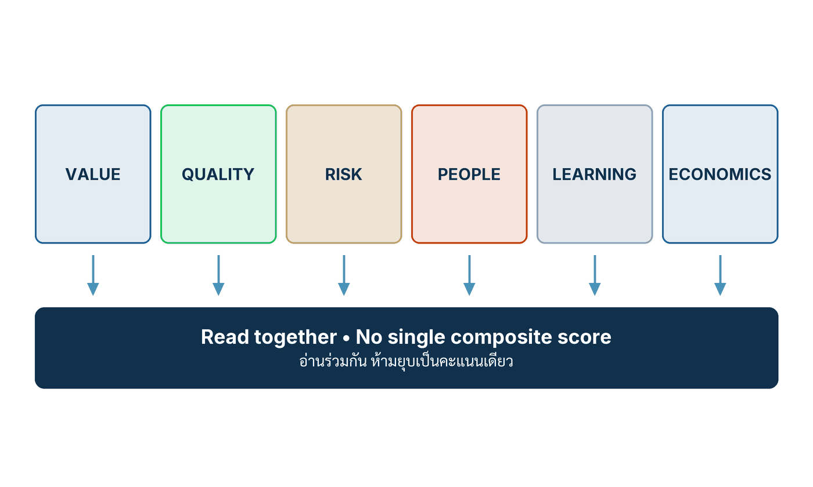

ในบทความนี้
- 1. Login ไม่ใช่ Adoption และ Usage ไม่ใช่ Value
- 2. วันที่ 91–120 PROVE — ปล่อยแคบ เทียบ Baseline แล้วซ้อม Kill Path
- 3. วันที่ 121–150 PREPARE — เปลี่ยนบทเรียนเป็น Shared Capability
- 4. วันที่ 151–180 DECIDE — Scale, Reshape, Hold หรือ Stop
- 5. Board scorecard หกคอลัมน์ และตารางทบทวนวันที่ 180
- 6. ตัวชี้วัดสิบหกตัว และรูปแบบความล้มเหลวของครึ่งหลัง
- 7. ก้าวต่อไป — เริ่มแคบ เรียนรู้เร็ว ขยายลึก
In this post
- 1. Logins Are Not Adoption, and Usage Is Not Value
- 2. Days 91–120 PROVE — Release Narrowly, Compare Against Baseline, Rehearse the Kill Path
- 3. Days 121–150 PREPARE — Turn Lessons Into Shared Capability
- 4. Days 151–180 DECIDE — Scale, Reshape, Hold or Stop
- 5. The Six-Column Board Scorecard, and the Day-180 Review Table
- 6. Sixteen Metrics, and the Failure Patterns of the Second Half
- 7. The Road Ahead — Start Narrow, Learn Fast, Scale Deep
🤔 Dashboard บอกว่าคนใช้เยอะ แต่ workaround ที่พนักงานทำเงียบ ๆ บอกอะไร?
ตอนที่แล้ว — #18 The First 90 Days — จบลงตรงจุดที่องค์กรมีของครบแล้วบนกระดาษ: มีผู้บริหารที่รับผิดชอบคุณค่าและความเสี่ยง มีการตัดสินใจเป้าหมายหนึ่งถึงสามเรื่องพร้อม Baseline มีกระบวนงานที่ออกแบบใหม่ มี Assessment ครบด้าน และมีระบบขั้นต่ำที่ใช้ได้จริงหนึ่งชุดที่ผ่านการทดสอบ Offline มาแล้ว สิ่งที่ยังไม่มีคือสิ่งเดียวที่สำคัญที่สุด — หลักฐานว่ามันได้ผลกับคนจริงในงานจริง
ครึ่งหลังของ 180 วันคือการไปเอาหลักฐานนั้นมา และคำตอบหนึ่งบรรทัดของบทที่ 12 คือ พิสูจน์วงจรการเรียนรู้ให้ครบหนึ่งรอบก่อนเปิดพอร์ตใหญ่ แล้วปล่อยให้หลักฐานเป็นคนตัดสินว่าอะไรสมควรได้ขยาย[1] ก่อนไปต่อ ขอปักหมุดข้อจำกัดที่คู่มือประกาศไว้เองตั้งแต่ย่อหน้าแรกของบท: ลำดับ 180 วันนี้ไม่มีกฎหมายหรือมาตรฐานใดกำหนด เป็นการสังเคราะห์ของผู้เขียนหนังสือที่เชื่อม AI-as-a-Core เข้ากับการจัดการความเสี่ยงตลอดวงจรชีวิต การปรับปรุงต่อเนื่อง การออกแบบกระบวนงานใหม่ Evaluation Gate และการมีส่วนร่วมของพนักงาน ส่วนหน้าที่ตามกฎหมายใช้ตลอดโครงการโดยไม่ขึ้นกับตารางเวลานี้[1] อ่านมันเป็นจังหวะที่พิสูจน์แล้วว่าใช้ได้ ไม่ใช่ปฏิทินที่ใครบังคับ
1. Login ไม่ใช่ Adoption และ Usage ไม่ใช่ Value
บทที่ 12 ให้หลักปฏิบัติมาห้าข้อ และข้อที่สามคือข้อที่ผมเห็นองค์กรเดินชนบ่อยที่สุดในช่วงเดือนที่สี่ถึงหก — ช่วงที่ระบบเพิ่งเปิดให้คนใช้ และทุกคนอยากได้ตัวเลขสวย ๆ ไปรายงาน
💡 มุมมองของผม: หลักปฏิบัติข้อ 3 ของบทนี้เขียนไว้สั้นมากว่า "Instrument outcomes before scaling usage — login is not adoption and usage is not value" ฉบับภาษาไทยของคู่มือเขียนว่า "วัด Outcome ก่อนเพิ่ม Usage Login ไม่ใช่ Adoption และ Usage ไม่ใช่ Value"[1] — ประโยคนี้ราคาแพงกว่าที่เห็น เพราะมันบอกเป็นนัยว่า ถ้าคุณยังวัด Outcome ไม่ได้ การเพิ่มจำนวนผู้ใช้ไม่ได้ทำให้คุณรู้มากขึ้น มันแค่ทำให้คุณผิดในสเกลที่ใหญ่ขึ้น
ผมอยากแยกบันไดสี่ขั้นนี้ให้ชัด เพราะสามคำแรกมักถูกใช้สลับกันในห้องประชุมจนไม่มีใครรู้ว่ากำลังพูดถึงอะไร
Login คือหลักฐานว่าบัญชีถูกสร้างและมีคนเปิดเข้าไป มันวัดง่ายที่สุดจึงถูกรายงานบ่อยที่สุด และมันบอกได้แค่ว่าประตูเปิดอยู่ องค์กรที่ประกาศจำนวนผู้ใช้ในเดือนแรก หลังจากส่งอีเมลบังคับให้ทุกคนล็อกอินอย่างน้อยหนึ่งครั้ง กำลังรายงานประสิทธิภาพของอีเมลฉบับนั้น ไม่ใช่ของระบบ
Usage คือหลักฐานว่ามีคนกดใช้งานซ้ำ ดีขึ้นหนึ่งขั้น แต่ยังไม่บอกว่าใช้แล้วงานเดินหรือไม่ ตัวเลขการใช้งานสูงเกิดขึ้นได้จากสาเหตุที่ตรงกันข้ามกันสองแบบ — ระบบมีประโยชน์มากจนคนกลับมาใช้ กับระบบให้คำตอบไม่ดีจนคนต้องถามซ้ำสามรอบ ทั้งสองแบบขึ้นกราฟเดียวกันและหน้าตาเหมือนกันเป๊ะ
Adoption คือหลักฐานว่ากลุ่มเป้าหมายเปลี่ยนวิธีทำงานจริง ไม่ใช่แค่เปิดหน้าจอเพิ่มอีกหนึ่งจอข้างของเดิม นี่เป็นขั้นแรกที่วัดยากขึ้นอย่างมีนัยสำคัญ เพราะต้องรู้ว่างานเดิมทำอย่างไรและงานใหม่ต่างไปตรงไหน — ซึ่งเป็นข้อมูลที่ Dashboard ของระบบไม่มีทางรู้
Value คือหลักฐานว่าผลลัพธ์ขององค์กรดีขึ้นเทียบกับ Baseline ที่ประกาศไว้ล่วงหน้า และดีขึ้นโดยไม่ได้ผลักภาระไปไว้ที่อื่น นี่คือขั้นเดียวที่ Board สนใจจริง ๆ และเป็นขั้นเดียวที่วัดไม่ได้เลยถ้าไม่ได้เตรียม Baseline ไว้ตั้งแต่ 90 วันแรก
อีกสี่ข้อของหลักปฏิบัติห้าประการ
หลักปฏิบัติที่เหลือกำกับครึ่งหลังของ 180 วันไว้คนละมุม และผมยกมาครบเพราะทั้งห้าข้อทำงานเป็นชุด ไม่ใช่ทีละข้อ[1]
ข้อ 1 สร้าง Learning Loop หนึ่งวงก่อน Portfolio ใหญ่ — ลงลึกก่อนกระจาย นี่คือเหตุผลทั้งหมดที่ 180 วันนี้พูดถึงการตัดสินใจแค่หนึ่งถึงสามเรื่อง ไม่ใช่ยี่สิบเรื่อง วงจรการเรียนรู้ (learning loop) หนึ่งวงที่ปิดสนิทสอนองค์กรได้มากกว่าโครงการนำร่องสิบโครงการที่ไม่มีวงไหนปิดเลย
ข้อ 2 Business และ Risk Ownership โอนไปทีม AI ไม่ได้ — Accountability ตาม Decision ข้อนี้เป็นข้อที่ถูกละเมิดอย่างสุภาพที่สุด เพราะไม่มีใครประกาศว่าโอนความรับผิดชอบไปแล้ว มันเกิดขึ้นเงียบ ๆ ตอนที่คำถามว่า "ทำไมเคสนี้ผลออกมาแบบนี้" ถูกส่งต่อไปให้ทีมเทคนิคตอบแทนเจ้าของกระบวนงาน คำว่า ความรับผิดรับชอบ (accountability) ในที่นี้แปลว่าคนที่ตอบคำถามของลูกค้าและของผู้กำกับดูแลต้องเป็นคนเดียวกับคนที่มีอำนาจสั่งหยุด
ข้อ 4 สร้าง Reusable Capability จากความต้องการที่พิสูจน์ — หลีกเลี่ยง Platform Speculation นี่คือหัวใจของช่วงวันที่ 121–150 ทั้งช่วง และผมจะขยายในหัวข้อที่ 3
ข้อ 5 หยุด Initiative ที่อ่อนอย่างโปร่งใส — Portfolio Discipline คืนกำลังให้สิ่งมีคุณค่า ข้อนี้คือหัวใจของวันที่ 151–180 และเป็นข้อที่ต้องการวัฒนธรรมมากกว่าเครื่องมือ ผมจะกลับมาที่หัวข้อที่ 4
สังเกตว่าไม่มีข้อไหนเลยใน 5 ข้อที่พูดถึงโมเดล ความแม่นยำ หรือสถาปัตยกรรม ทั้งห้าข้อพูดถึงลำดับการทำงาน เจ้าของ และวินัยการตัดสินใจ ซึ่งเป็นสิ่งที่ผู้บริหารควบคุมได้โดยตรงและมักไม่ได้ควบคุม
2. วันที่ 91–120 PROVE — ปล่อยแคบ เทียบ Baseline แล้วซ้อม Kill Path
คู่มือเขียนช่วง พิสูจน์ ไว้เป็นย่อหน้าเดียวที่อัดแน่นมาก ผมยกฉบับภาษาไทยมาทั้งย่อหน้าก่อน แล้วค่อยแกะทีละท่อน[1]
"วันที่ 91 ถึง 120 ปล่อยแบบแคบและเรียนรู้จริง ใช้ Canary หรือกลุ่มจำกัดพร้อม Support เปรียบเทียบ Baseline หรือ Control ติดตาม Outcome, Quality, Critical Error, Override, Complaint, Subgroup Effect, Cost, Reviewer Load และ Environmental Use ซ้อม Kill Path สัมภาษณ์ User และ Operator เพราะ Workaround เปิดปัญหาที่ Dashboard มองไม่เห็น หยุดกรณีไร้คุณค่าหรือควบคุมไม่ได้"
หกคำสั่งในย่อหน้าเดียว และเรียงตามลำดับที่ต้องทำจริง ไม่ใช่เรียงตามความสำคัญ
ปล่อยแคบแปลว่าอะไร และแคบแค่ไหนจึงพอ
Canary คือการเปิดให้ปริมาณงานส่วนน้อยวิ่งผ่านระบบใหม่ ขณะที่ส่วนใหญ่ยังวิ่งทางเดิม ส่วน "กลุ่มจำกัด" คือการเลือกกลุ่มผู้ใช้ที่รู้ตัวว่ากำลังร่วมทดลองและติดต่อกลับได้ ทั้งสองแบบใช้ได้ แต่คำที่คนอ่านข้ามบ่อยที่สุดคือคำว่า พร้อม Support — ปล่อยแคบโดยไม่มีคนคอยรับสายจากผู้ใช้กลุ่มนั้นไม่ใช่การทดลอง มันคือการโยนของให้คนกลุ่มเล็กแบกแทนคนกลุ่มใหญ่
คำถามว่า "แคบแค่ไหนจึงพอ" ไม่มีคำตอบสากล แต่มีเกณฑ์ที่ใช้ได้: แคบพอที่ความเสียหายกรณีเลวร้ายที่สุดยังอยู่ในระดับที่คุณเยียวยาได้ภายในวันเดียว และกว้างพอที่จะเจอกรณีขอบภายในสี่สัปดาห์ ถ้าเปิดแคบเกินไปจนสี่สัปดาห์ผ่านไปแล้วยังไม่เจอเคสยากเลย คุณไม่ได้กำลังทดลอง คุณกำลังเลื่อนการเรียนรู้ออกไปโดยมีเหตุผลฟังขึ้น
ท่าที่สองคือ เปรียบเทียบ Baseline หรือ Control — และคำว่า "หรือ" ตรงนี้สำคัญ Baseline คือค่าของกระบวนงานเดิมที่บันทึกไว้ก่อนเริ่ม ส่วน Control คือปริมาณงานที่ยังวิ่งทางเดิมพร้อมกันในช่วงเวลาเดียวกัน อย่างหลังแข็งแรงกว่ามาก เพราะกันปัจจัยตามฤดูกาลและการเปลี่ยนแปลงอื่น ๆ ที่เกิดพร้อมกันออกไปได้ ถ้าเลือกได้ ให้เก็บทางเดิมไว้เดินคู่ขนานสักช่วงหนึ่ง ต้นทุนของการรันสองทางถูกกว่าต้นทุนของการเถียงกันหกเดือนว่าตัวเลขที่ดีขึ้นมาจากระบบใหม่หรือมาจากฤดูกาล
เก้าอย่างที่ต้องติดตามพร้อมกัน
รายการที่คู่มือให้ไว้มีเก้าตัว และเจตนาของมันคือต้องอ่านพร้อมกัน ไม่ใช่เลือกอ่านเฉพาะตัวที่ดูดี ผมเติมคอลัมน์ Scorecard เข้าไปเพื่อให้เห็นว่าแต่ละตัวไปโผล่ที่คอลัมน์ไหนของ Board scorecard ในหัวข้อที่ 5 — การจับคู่นี้เป็นของผม ไม่ใช่ของคู่มือ
| # | Monitor | What it exposes | Scorecard |
|---|---|---|---|
| 1 | Outcome | ผลลัพธ์ของกระบวนงานดีขึ้นเทียบ Baseline หรือ Control จริงหรือไม่ | Value |
| 2 | Quality | งานที่ออกมาถูกต้องและมีหลักฐานรองรับ หรือแค่ออกมาเร็ว | Quality |
| 3 | Critical error | ความผิดพลาดที่แพงที่สุดเกิดขึ้นกี่ครั้ง — ตัวที่ค่าเฉลี่ยกลบได้เก่งที่สุด | Risk |
| 4 | Override | มนุษย์แก้ผลของระบบบ่อยแค่ไหน และแก้ด้วยเหตุผลอะไร | People |
| 5 | Complaint | ผู้ได้รับผลปลายทางเดือดร้อนเรื่องอะไร ในแบบที่ตัวเลขภายในมองไม่เห็น | Risk |
| 6 | Subgroup effect | ผลดีขึ้นทั้งหมด หรือดีขึ้นเฉพาะกลุ่มง่ายแล้วกลุ่มยากแย่ลง | Quality |
| 7 | Cost | ต้นทุนต่อกรณีที่สำเร็จ ไม่ใช่ต้นทุนต่อการเรียกใช้ | Economics |
| 8 | Reviewer load | เราย้ายงานไปให้ระบบแล้วสร้างงานใหม่ไว้บนไหล่ผู้ตรวจหรือเปล่า | People |
| 9 | Environmental use | การใช้พลังงานและทรัพยากรที่เกิดขึ้นจริงจากปริมาณงานชุดนี้ | Economics |
ตัวที่ 4 คือตัวที่ผมอยากให้เก็บละเอียดที่สุด ไม่ใช่เพราะมันวัดคน แต่เพราะเหตุผลของการ Override คือข้อมูลออกแบบที่ดีที่สุดที่จะได้จากช่วงนี้ ผู้ปฏิบัติงานที่แก้ผลของระบบกำลังบอกคุณอยู่ว่าระบบเข้าใจอะไรผิด และเขาบอกในภาษาที่ตรงที่สุดเท่าที่จะเป็นไปได้ ถ้าเก็บแต่อัตราการ Override เป็นเปอร์เซ็นต์โดยไม่เก็บเหตุผล คุณจะได้ตัวชี้วัดหนึ่งตัวและเสียข้อมูลที่มีค่าที่สุดของทั้งเดือนไป
Kill Path คือสิ่งที่ต้องซ้อม ไม่ใช่สิ่งที่ต้องเขียน
คู่มือใช้คำว่า "ซ้อม Kill Path" ไม่ใช่ "มี Kill Path" และความต่างนี้คือความต่างระหว่างเอกสารกับความสามารถ องค์กรเกือบทุกแห่งมีหน้าในแผนที่เขียนว่าจะปิดระบบอย่างไร องค์กรส่วนน้อยมากเคยกดปิดจริงในเวลาทำการโดยมีคนจับเวลา
ตรงนี้เป็นจุดเดียวในช่วงนี้ที่มีเอกสารสาธารณะของหน่วยงานมาตรฐานรองรับโดยตรง NIST เผยแพร่ Artificial Intelligence Risk Management Framework: Generative Artificial Intelligence Profile (NIST AI 600-1) และในฟังก์ชัน MANAGE ระบุการกระทำสำหรับช่วงหลังนำระบบออกใช้ไว้ชัดเจน ทั้งการเฝ้าติดตามหลัง Deployment ช่องทางอุทธรณ์และการ Override การปลดระวางระบบ การตอบสนองต่อเหตุการณ์ผิดปกติ การกู้คืน และการจัดการการเปลี่ยนแปลง (MANAGE 4.1) รวมถึงการเฝ้าติดตามเป็นประจำและการทบทวนหลังเหตุการณ์ (MANAGE 4.2)[2] ณ วันที่ 5 กันยายน 2026 NIST AI 600-1 (ลงวันที่ 26 กรกฎาคม 2024) ยังเป็นฉบับปัจจุบันของ Generative AI Profile ขณะที่ NIST ระบุบนหน้าเว็บของตัวเองว่า AI RMF 1.0 กำลังอยู่ระหว่างการปรับปรุง[2]
ต้องเน้นขอบเขตไว้ตรงนี้ด้วย เอกสารของ NIST เป็นกรอบโดยสมัครใจและระบุเองว่าองค์กรต้องเลือกและปรับการกระทำให้เข้ากับกรณีใช้งานและระดับความเสี่ยงที่ตนรับได้[2] มันไม่ได้กำหนดว่าต้องปล่อยกี่เปอร์เซ็นต์ ทบทวนกี่ชั่วโมง หรือใช้ลำดับ 180 วันแบบนี้ — สิ่งเดียวที่มันยืนยันคือ การเฝ้าระวังหลังปล่อยใช้และเส้นทางถอยเป็นความคาดหมายที่ถูกเขียนไว้แล้วในเอกสารสาธารณะ ไม่ใช่ความระแวงส่วนตัวของผู้เขียนหนังสือเล่มนี้
CX-REFUND-01 — canary ที่ทำถูกทุกขั้น แล้วยังพังอยู่ดี
คู่มือมีกรณีตัวอย่างที่ใช้ร่วมกันทั้งเล่มคือผู้ช่วยงานคืนเงินของ Luma Commerce Thailand รหัส CX-REFUND-01 (กรณีสมมติจากหนังสือ) ตัวเลขทุกตัวต่อจากนี้เป็นค่าสมมติที่คู่มือกำกับไว้เองว่า "ผลและคำตัดสินสมมติ" ห้ามนำไปใช้เป็นเกณฑ์หรือเป้าหมายของระบบจริง[1] ผมยกมาเพราะรูปร่างของเรื่องถูกต้องมาก ไม่ใช่เพราะตัวเลข
ก่อนปล่อย ระบบผ่าน ด่านอนุมัติการนำระบบออกใช้ (release gate) ที่บันทึกผลไว้เป็นกลุ่ม ๆ กลุ่ม Utility ได้ Weighted Success 94.6% โดยกลุ่มกรณีสำคัญยังอยู่ที่ 89.1% ขึ้นไป กลุ่ม Semantic และ Security ได้ Support 96.8% กับ False Accept 1.7% ส่วนกลุ่ม Operations ได้ p95 ที่ 3.4 วินาที และ Rollback Drill ใช้เวลา 11 นาที[1]
คำตัดสินที่บันทึกไว้คือ อนุมัติ Manifest rc4 ที่ระดับการเปิดรับ 5% แล้วจึงขยับเป็น 25% หลังการทบทวน 48 ชั่วโมงเท่านั้น พร้อมเงื่อนไขหยุดสี่ข้อ — พบ Prohibited Effect, พบการหลุดรอดเชิงนโยบายระดับรุนแรง, Trace หายไป หรือผู้ตรวจรับภาระเกินกำลัง — โดยให้ Rollback กลับไปที่ prod2 และมี N. Kanya เป็นเจ้าของการทบทวน[1]
สังเกตว่าคำตัดสินนี้มีครบทุกอย่างที่คำตัดสินที่ดีต้องมี: ระดับการเปิดรับที่เป็นตัวเลข เงื่อนไขเลื่อนขั้นที่เป็นเวลา เงื่อนไขหยุดที่เป็นเหตุการณ์ไม่ใช่ความรู้สึก ปลายทางของการถอยที่มีชื่อรุ่นจริง และชื่อคนหนึ่งชื่อ ไม่ใช่ชื่อคณะกรรมการ นี่คือสิ่งที่การทำถูกหน้าตาเป็นแบบนี้
แล้วมันก็ยังพัง
ที่ Rollout 25% ลูกค้ารายหนึ่งได้รับข้อความยืนยันสิทธิ์ 60 วัน ซึ่งมาจากหน้าโปรโมชันเก่าที่หมดอายุแล้วแต่ยังอยู่ใน Allow-list โมเดลเสนอคืนเงิน 2,400 บาทในวันที่ 45 — Execution Guard บล็อกการจ่ายเงินไว้ได้ แต่ Output Rail ปล่อยคำอธิบายที่ผิดออกไปแล้ว เงื่อนไขหยุดทำงาน rc4 ถูก Rollback และเคสโปรโมชันทั้งหมดถูกส่งกลับไปให้คนทำ[1]
ขั้นถัดมาคือขั้นที่ทำให้เรื่องนี้เป็นตัวอย่างของการ PROVE ที่ทำถูก ร่องรอยที่สร้างเหตุการณ์ย้อนกลับได้ (reconstructable trace) ยืนยันว่าไม่มีผลทางการเงินเกิดขึ้นจริง และชี้ตัวได้ว่าต้นเหตุคือ Corpus 2026-09-01 ที่มีข้อความเก่าค้างอยู่ บวกกับ Support Scorer ที่ยอมรับข้อความนั้นผิดพลาด และ Payload ที่ถูกปล่อยออกไป เหตุการณ์ถูกจัดชั้นเป็น Severe Semantic Policy Escape ร่วมกับ Near Miss โดยข้อบังคับเชิงโครงสร้างของการทำงานยังทำงานอยู่ตลอด[1]
การวินิจฉัยชี้ไปที่ขอบเขตสองจุดที่ออกแบบไว้ไม่ครบ — Allow-list ตรวจ "ตัวตน" ของแหล่งข้อมูลแต่ไม่ได้ตรวจ "วันมีผลบังคับ" และ Support Scorer ทดสอบความสอดคล้องของข้อความแต่ไม่ได้ทดสอบความเป็นปัจจุบันของนโยบาย เจ้าของคลังความรู้จึงถอนหน้านั้นออก บังคับให้ทุกหน้าต้องมี Metadata ระบุเจ้าของ วันมีผล และวันหมดอายุ พร้อมเพิ่มการตรวจจับความขัดแย้ง ส่วนทีม CX Quality เพิ่มการตรวจความถูกต้องตามเวลาและกระบวนการแจ้งแก้ไขให้ลูกค้า[1]
จากนั้นกรณีที่พลาดถูกแปลงเป็น Regression Case รหัส CXGS-241 กรณีที่เกี่ยวข้องทั้งแบบ Hidden, Adaptive, สองภาษา และแบบสถานะซ้ำ ผ่านทั้งหมด การทบทวนนโยบายโดยผู้ตรวจอิสระอนุมัติ Manifest ใหม่ rc5 และเปิดใหม่ที่ 5% พร้อมรอบทบทวน 24 ชั่วโมง — สังเกตว่ารอบทบทวนสั้นลงจาก 48 เป็น 24 ชั่วโมง เพราะความไม่แน่นอนเพิ่งเพิ่มขึ้น ไม่ใช่ลดลง สุดท้าย สัญญา โครงสร้าง Manifest กระบวนการเผยแพร่แหล่งข้อมูล และ Runbook ถูกปรับ การตรวจความสดของข้อมูลชุดเดียวกันถูกนำไปใช้กับผลิตภัณฑ์คืนสินค้าและรับประกันด้วย และเหตุการณ์จะปิดได้ก็ต่อเมื่อลูกค้าได้รับการเยียวยาแล้ว ผ่านการเฝ้าระวังการเกิดซ้ำเจ็ดวัน และมีการลงนามทบทวนหลักฐาน[1]
คู่มือกำกับ วงจรเรียนรู้จากเหตุการณ์ผิดปกติ (incident-learning loop) — ซึ่งผมแกะไว้ทั้งวงใน #15 — ไว้ด้วยกฎข้อเดียวที่ผมอยากให้ติดไว้ข้างจอ[1]
"เก็บกรณีเสียก่อนแก้ และอย่าสรุปเพียงว่า 'โมเดลหลอน' ต้องถามว่า Boundary ใดยอมรับ เชื่อ อนุญาต ปล่อย หรือมองไม่เห็นพฤติกรรมนั้น"
และคู่ของมันในฝั่ง Release gate ซึ่งเป็นประโยคที่กันการโกงตัวเองในช่วงพิสูจน์ได้ดีที่สุดเท่าที่ผมเคยอ่าน[1]
"Never average away a failed structural invariant or severe slice. A clean fixed suite does not establish adaptive robustness. Exceptions must name residual risk, approver, expiry and compensating control." — ห้ามใช้ค่าเฉลี่ยกลบข้อบังคับเชิงโครงสร้างที่ล้มเหลวหรือกลุ่มกรณีรุนแรง ชุดทดสอบตายตัวที่ผ่านหมดไม่ได้พิสูจน์ความทนทานต่อการทดสอบแบบปรับตัว และข้อยกเว้นทุกข้อต้องระบุความเสี่ยงคงเหลือ ผู้อนุมัติ วันหมดอายุ และมาตรการชดเชย
สัมภาษณ์คน เพราะ Workaround เปิดปัญหาที่ Dashboard มองไม่เห็น
ท่าที่ห้าของช่วงนี้เป็นท่าที่ถูกตัดออกจากแผนงานบ่อยที่สุดเวลาตารางแน่น และเป็นท่าที่มีอัตราผลตอบแทนสูงที่สุดต่อชั่วโมงที่ลงไป คู่มือให้เหตุผลไว้ตรง ๆ ว่า "interview users and operators because workarounds expose defects dashboards miss" — สัมภาษณ์ผู้ใช้และผู้ปฏิบัติงาน เพราะทางเลี่ยงที่พวกเขาคิดขึ้นเองเปิดข้อบกพร่องที่ Dashboard มองไม่เห็น[1]
เหตุผลเชิงกลไกนั้นเรียบง่าย Dashboard วัดสิ่งที่ระบบทำ แต่ Workaround คือสิ่งที่คนทำนอกระบบเพื่อให้งานเดิน มันจึงไม่มีทางปรากฏบนกราฟใด ๆ ตามนิยาม เมื่อพนักงานสองคนคัดลอกผลของระบบไปแก้ในไฟล์ส่วนตัวก่อนส่งต่อ Dashboard จะรายงานว่ามีการใช้งานครบทุกเคส และคุณภาพผลลัพธ์ปลายทางดี ทั้งสองอย่างจริง และทั้งสองอย่างปิดบังความจริงข้อที่สามคือระบบผลิตของที่ใช้ทันทีไม่ได้
วิธีสัมภาษณ์ที่ผมใช้ได้ผลคือถามสามคำถาม ครั้งละคน ครั้งละยี่สิบนาที ไม่มีหัวหน้าอยู่ในห้อง — "สัปดาห์ที่แล้วมีครั้งไหนที่คุณไม่ใช้ระบบทั้งที่ควรใช้" · "ผลที่ระบบให้มา คุณต้องแก้อะไรก่อนใช้ได้จริง" · "ถ้าพรุ่งนี้ระบบหายไป งานของคุณเปลี่ยนไปอย่างไร" คำถามที่สามเป็นคำถามที่ตอบยากที่สุดและได้ข้อมูลตรงที่สุด เพราะมันวัดความขาดไม่ได้ (indispensability) ในสายตาของคนที่ใช้จริง ไม่ใช่ในสายตาของคนที่ซื้อ
ท่าสุดท้ายของช่วงคือ หยุดกรณีไร้คุณค่าหรือควบคุมไม่ได้ และคำสั่งนี้อยู่ในช่วงวันที่ 91–120 ไม่ใช่ช่วง 151–180 โดยเจตนา การหยุดไม่ใช่เรื่องของวันตัดสินเท่านั้น ถ้าเดือนที่สี่บอกคุณแล้วว่าเคสกลุ่มนี้ไม่มีทางคุมได้ การลากมันไปอีกสองเดือนเพื่อ "ให้ครบตามแผน" คือการจ่ายค่าความสุภาพด้วยงบประมาณและเวลาของทีม
3. วันที่ 121–150 PREPARE — เปลี่ยนบทเรียนเป็น Shared Capability
ช่วง เตรียมขยาย เป็นช่วงที่สั้นที่สุดในความรู้สึกและอันตรายที่สุดในทางปฏิบัติ เพราะมันคือช่วงที่คำว่า "แพลตฟอร์ม" กลับเข้ามาในห้องประชุมอย่างถูกกฎหมายเป็นครั้งแรก คู่มือเขียนไว้แบบนี้[1]
"วันที่ 121 ถึง 150 เปลี่ยนบทเรียนเป็น Shared Capability สกัดบริการใช้ซ้ำสำหรับ Model Access, Context, Evaluation, Identity, Tool, Trace, Data Product, Vendor Clause, Impact Assessment และ Training แบ่งว่าสิ่งใด Central และสิ่งใดอยู่ Domain สร้าง Intake, Funding, Architecture, Release, Monitoring และ Retirement อย่าสร้าง Platform ใหญ่ก่อน Workflow แรกเปิดความต้องการจริง"
คำกริยาที่ใช้คือ "สกัด" ไม่ใช่ "สร้าง" — และความต่างนี้คือทั้งหมดของช่วงนี้ สกัดแปลว่าของมีอยู่แล้วในกระบวนงานแรกที่คุณเพิ่งพิสูจน์เสร็จ หน้าที่ของเดือนนี้คือแยกส่วนที่ใช้ซ้ำได้ออกมาจากส่วนที่เป็นของเฉพาะเคสนั้น ไม่ใช่จินตนาการว่าอีกสิบกระบวนงานข้างหน้าจะต้องการอะไร
สิบบริการที่ควรถอดออกมาใช้ซ้ำ
สิบรายการนี้คือส่วนประกอบของสิ่งที่ซีรีส์นี้เรียกว่า โรงงาน AI และข้อมูล (AI and data factory) ซึ่งผมเขียนไว้เต็ม ๆ ใน #9 คอลัมน์ที่สามเป็นข้อเสนอของผม ไม่ใช่ของคู่มือ — คู่มือระบุแค่ว่าต้อง "แบ่งว่าสิ่งใด Central และสิ่งใดอยู่ Domain" แล้วปล่อยให้แต่ละองค์กรตัดสินเอง
| Reusable service | ทำไมจึงคุ้มที่จะทำครั้งเดียว | Central หรือ Domain |
|---|---|---|
| Model access | การต่อโมเดลใหม่ไม่ควรเป็นโครงการ ควรเป็นการเปลี่ยนค่าตั้งค่าที่มีผู้อนุมัติ | Central |
| Context | กติกาว่าอะไรเข้าไปอยู่ในบริบทได้บ้างต้องเหมือนกันทุกงาน มิฉะนั้นความปลอดภัยขึ้นกับว่าใครเป็นคนเขียน | Central (บริการ) · Domain (เนื้อหา) |
| Evaluation | เครื่องมือรันชุดทดสอบใช้ซ้ำได้ แต่กรณีทดสอบเป็นความรู้ของหน่วยงานเจ้าของงาน | Central (เครื่องมือ) · Domain (กรณี) |
| Identity | คำถามว่า "ใครสั่งการนี้" ต้องตอบได้ด้วยกลไกเดียวทั้งองค์กร | Central |
| Tool | ทะเบียนเครื่องมือกลางกันไม่ให้เกิดเครื่องมือที่มีอำนาจกระทำโดยไม่มีใครรู้ | Central (ทะเบียน) · Domain (ตัวเครื่องมือ) |
| Trace | รูปแบบร่องรอยที่ต่างกันทำให้สอบสวนข้ามระบบไม่ได้ในวันที่ต้องการมากที่สุด | Central |
| Data product | ข้อมูลที่มีเจ้าของ สัญญาคุณภาพ และเวอร์ชัน ใช้ได้หลายงาน ข้อมูลที่ไม่มีสามอย่างนี้ใช้ได้งานเดียว | Domain (เจ้าของ) · Central (มาตรฐาน) |
| Vendor clause | ข้อสัญญาเรื่องการใช้ข้อมูล การแจ้งเหตุ และสิทธิ์ตรวจสอบ ต่อรองครั้งเดียวใช้ได้ทุกสัญญาถัดไป | Central |
| Impact assessment | การประเมินผลกระทบ ที่มีแม่แบบเดียวกันทำให้เปรียบเทียบข้ามงานได้ และทำให้คนกรอกเร็วขึ้นมาก | Central (แม่แบบ) · Domain (เนื้อหา) |
| Training | สิ่งที่ต้องสอนคือวิธีตรวจงานของระบบและวิธีส่งต่อเมื่อไม่แน่ใจ ซึ่งเหมือนกันเกือบทุกงาน | Central (หลักสูตร) · Domain (การจัดอบรม) |
วิธีทดสอบว่าอะไรควรเป็น Central ที่ผมใช้คือคำถามเดียว: ถ้าสองหน่วยงานทำสิ่งนี้ต่างกัน จะเกิดความเสี่ยงหรือแค่ความไม่สะดวก ถ้าคำตอบคือความเสี่ยง — เช่น Identity, Trace, Vendor Clause — ให้เป็น Central ถ้าคำตอบคือความไม่สะดวก ให้อยู่ที่ Domain แล้วค่อยรวมทีหลังเมื่อมีคนที่สามมาขอ การรวมเร็วเกินไปทำให้ทีมกลางกลายเป็นคอขวดของงานที่ตัวเองไม่เข้าใจ
หกเรื่องที่ต้องมีเจ้าของ ก่อนจะมีอะไรให้ใช้ซ้ำ
คู่มือระบุกลไกกำกับหกอย่างที่ต้องตั้งขึ้นในช่วงเดียวกัน และผมอ่านมันเป็นวงจรชีวิตหนึ่งวงจร ไม่ใช่หกกล่องแยกกัน[1]
- Intake — คำขอใช้ความสามารถร่วมเข้ามาทางไหน ใครคัดกรอง และคัดด้วยเกณฑ์อะไร ถ้าไม่มีทางเข้าอย่างเป็นทางการ ทางเข้าจริงจะกลายเป็นความสนิทสนม
- Funding — ใครจ่ายค่าความสามารถร่วม นี่คือข้อที่ล้มโครงการมากที่สุด เพราะทีมกลางถูกขอให้สร้างของที่ทุกคนใช้ ด้วยงบที่ไม่มีใครยอมกัน
- Architecture — ใครมีอำนาจบอกว่า "อย่าต่อแบบนั้น" และคำว่าไม่นั้นอุทธรณ์ที่ไหน
- Release — ด่านอนุมัติร่วมที่ทุกงานต้องผ่าน พร้อมสิทธิ์ยกเว้นที่มีวันหมดอายุเสมอ
- Monitoring — ความสามารถในการสังเกตระบบ (observability) ที่เป็นของกลาง ไม่ใช่แต่ละทีมมี Dashboard ของตัวเองที่นิยามคำว่า "ผิดพลาด" ไม่ตรงกัน
- Retirement — ข้อที่ถูกลืมเสมอ ระบบที่ปลดระวางไม่ได้จะสะสมเป็นหนี้ที่คิดดอกเบี้ยเป็นความเสี่ยง และการปลดระวางต้องออกแบบพร้อมกับการเปิดใช้ ไม่ใช่คิดตอนอยากเลิก
มาตรฐานที่มีอยู่แล้วสำหรับ "ทำเป็นระบบ แล้วปรับปรุงต่อเนื่อง"
สิ่งที่ช่วงวันที่ 121–150 กำลังสร้างมีชื่อเรียกในโลกมาตรฐานว่า ระบบการจัดการ AI (AI management system) ISO/IEC 42001:2023 คือมาตรฐานที่ว่าด้วยเรื่องนี้โดยตรง คำอธิบายสาธารณะของ ISO ระบุขอบเขตไว้ว่าเอกสารนี้ "กำหนดข้อกำหนดและให้แนวทางสำหรับการจัดตั้ง นำไปใช้ ธำรงรักษา และปรับปรุงอย่างต่อเนื่องซึ่งระบบการจัดการปัญญาประดิษฐ์ภายในบริบทขององค์กร" และอธิบายว่ามาตรฐานถูกสร้างบนกระบวนการ Plan-Do-Check-Act พร้อมส่งเสริมให้องค์กรประเมินความเสี่ยงด้าน AI และกำหนดกิจกรรมจัดการความเสี่ยงเป็นระยะ ๆ อย่างสม่ำเสมอ[3] ข้อที่ 8.4 ของมาตรฐานมีชื่อว่า AI system impact assessment ซึ่งเป็นคู่ขนานโดยตรงกับบริการใช้ซ้ำข้อที่เก้าในตารางข้างบน[3] ณ วันที่ 5 กันยายน 2026 ISO/IEC 42001:2023 ยังมีสถานะ Published ฉบับที่ 1 เผยแพร่เดือนธันวาคม 2023[3]
ขอบเขตสามข้อที่ต้องพูดพร้อมกันเสมอ หนึ่ง — คู่มือต้นทางระบุเองว่าอ้างอิงเฉพาะคำอธิบายสาธารณะของ ISO และไม่ได้ทำซ้ำเนื้อความของข้อกำหนดที่มีลิขสิทธิ์ ผมทำแบบเดียวกันในบทความนี้ สอง — การรับรองตามมาตรฐานดำเนินการโดยหน่วยรับรองอิสระ ไม่ใช่โดย ISO และไม่มีอะไรในบทความนี้ที่เป็นคำแนะนำเรื่องการขอการรับรอง สาม — ISO/IEC 42001 กับ NIST AI 600-1 กับรายงาน AI Index ไม่ใช่ของชนิดเดียวกันและใช้แทนกันไม่ได้ อันแรกเป็นมาตรฐานระบบการจัดการที่ขอการรับรองได้ อันที่สองเป็นโปรไฟล์ของกรอบโดยสมัครใจ อันที่สามเป็นรายงานประจำปีที่อิงแบบสำรวจ การเอาสามอย่างนี้มาวางเรียงกันเป็น "มาตรฐานที่เราปฏิบัติตาม" ในสไลด์เดียวเป็นความคลาดเคลื่อนที่ผมเห็นบ่อยและควรแก้ตั้งแต่ต้น
สิ่งที่ผมอยากให้เอาไปใช้จริงจากมาตรฐานนี้ในเดือนที่ห้า ไม่ใช่การไปขอการรับรอง แต่คือรูปร่างของ Plan-Do-Check-Act กับคำว่า "เป็นระยะ ๆ อย่างสม่ำเสมอ" — เพราะมันตอบคำถามว่าทำไมวันที่ 151–180 ถึงต้องมีวันทบทวนที่กำหนดไว้ล่วงหน้า ไม่ใช่ทบทวนเมื่อมีเรื่อง องค์กรที่ทบทวนเฉพาะตอนมีเรื่องจะมีข้อมูลเฉพาะตอนที่แก้ไม่ทันแล้ว
4. วันที่ 151–180 DECIDE — Scale, Reshape, Hold หรือ Stop
สามสิบวันสุดท้ายคือช่วงที่ทั้ง 180 วันมีอยู่เพื่อมัน คู่มือเขียนไว้ดังนี้[1]
"วันที่ 151 ถึง 180 ตัดสินสิทธิ์ในการขยาย ทบทวน Evidence กับ Executive, Operator, Risk และ Worker Representative ตัดสินแต่ละ Initiative เป็น Scale, Reshape, Hold หรือ Stop ยืนยัน Realized Value, Residual Risk, Workforce Effect, Environmental Cost และ Learning Rate ปรับ Policy กับ Evaluation ปิด Corrective Action และเลือก Decision ถัดไปที่ใช้ Core เดิม อนุมัติ Roadmap สองไตรมาสและ Capability Budget"
คำสำคัญที่สุดในย่อหน้านี้อยู่บรรทัดแรก และไม่ใช่คำว่า "ตัดสิน" แต่เป็นรายชื่อคนสี่กลุ่มที่ต้องอยู่ในห้อง
ใครต้องอยู่ในห้อง
Executive อยู่เพราะการตัดสินใจนี้จัดสรรงบและกำลังคน และเพราะคำว่า Stop ต้องออกจากปากคนที่มีอำนาจพอที่คำนั้นจะไม่ถูกอุทธรณ์เงียบ ๆ ในสัปดาห์ถัดมา
Operator — ผู้ปฏิบัติงานจริง — อยู่เพราะเขาเป็นคนเดียวในห้องที่รู้ว่าตัวเลขบนสไลด์เกิดขึ้นได้อย่างไร และรู้ว่ามีงานอะไรบ้างที่ไม่ปรากฏบนสไลด์ ถ้าห้องนี้มีแต่ผู้บริหารกับทีมเทคนิค คุณกำลังทบทวนเรื่องเล่า ไม่ได้ทบทวนหลักฐาน
Risk อยู่เพราะความเสี่ยงคงเหลือต้องมีคนรับไว้อย่างเป็นทางการ ไม่ใช่ปล่อยให้ลอย และเพราะการตัดสินใจ Scale คือการเพิ่มปริมาณการสัมผัสความเสี่ยงนั้นเป็นเท่าตัว
Worker Representative — เสียงและการมีส่วนร่วมของพนักงาน (worker voice) — อยู่เพราะการขยายระบบเปลี่ยนเนื้องานของคนจำนวนมากพร้อมกัน และเพราะข้อมูลเรื่องภาระผู้ตรวจกับความไว้วางใจจะไม่มีวันมาถึงห้องนี้ครบถ้วน ถ้าเส้นทางเดียวที่มันเดินทางได้คือผ่านสายบังคับบัญชาของคนที่กำลังขอให้อนุมัติการขยาย
สี่คำตัดสิน
คู่มือให้คำตัดสินไว้สี่คำและไม่ได้ให้เกณฑ์ของแต่ละคำ — คอลัมน์ "เลือกเมื่อ" ข้างล่างจึงเป็นข้อเสนอของผมจากการอ่านทั้งบท ไม่ใช่ข้อความของคู่มือ ผมคงคำทั้งสี่ไว้เป็นภาษาอังกฤษตามที่ฉบับภาษาไทยของคู่มือทำ (คำถาม Q8 ในตอน #1 แปลไว้ว่า "อะไรสมควรได้ขยาย ปรับรูป หยุดชั่วคราว หรือยุติ")
| Decision | เลือกเมื่อ | สิ่งที่ต้องบันทึกพร้อมคำตัดสิน |
|---|---|---|
| Scale | หลักฐานครบทั้งหกคอลัมน์ และไม่มีคอลัมน์ใดถอยหลังเพื่อแลกกับอีกคอลัมน์ | ขยายไปที่ไหนเป็นที่แรก ระดับการเปิดรับเริ่มต้น เงื่อนไขหยุดชุดใหม่ และวันทบทวนถัดไป |
| Reshape | คุณค่าปรากฏชัด แต่รูปของงานยังผิด — ภาระตกที่ผู้ตรวจ หรือกลุ่มกรณีบางกลุ่มยังแย่ลง | สิ่งที่จะเปลี่ยนคืออะไร (กระบวนงาน ข้อมูล การควบคุม หรือบทบาทคน) ใครเป็นเจ้าของการเปลี่ยน และหลักฐานใดจะบอกว่าเปลี่ยนแล้วดีขึ้น |
| Hold | หลักฐานยังไม่พอจะตัดสิน และเหตุที่ไม่พอเป็นเหตุที่แก้ได้ในเวลาที่กำหนดได้ | หลักฐานชิ้นที่ขาดคืออะไร ใครไปเอามา ภายในวันไหน และถ้าถึงวันนั้นแล้วยังไม่มา คำตัดสินจะกลายเป็นอะไรโดยอัตโนมัติ |
| Stop | ไม่ชนะ Baseline หรือควบคุมผลกระทบไม่ได้ในต้นทุนที่ยอมรับได้ | สิ่งที่เก็บกลับมาใช้ต่อ (ชุดทดสอบ ข้อมูล บทเรียน) คนที่กลับไปทำอะไรต่อ และประโยคสาธารณะที่อธิบายการหยุดโดยไม่โทษใคร |
ช่องขวาล่างของตารางนี้คือช่องที่ยากที่สุดในทั้งตาราง และเป็นเหตุผลที่หลักปฏิบัติข้อ 5 ต้องถูกเขียนเป็นหลักปฏิบัติแทนที่จะปล่อยให้เป็นสามัญสำนึก
💡 มุมมองของผม: ในหลักปฏิบัติข้อ 5 ที่ยกไว้ในหัวข้อที่ 1 คำว่า "โปร่งใส" ทำงานหนักกว่าคำว่า "หยุด" มาก องค์กรจำนวนมากหยุดโครงการอยู่แล้ว แต่หยุดแบบเงียบ ๆ ปล่อยให้งบหมดไปเอง ไม่มีประกาศ ไม่มีบทเรียนที่บันทึกไว้ ผลคือคนทั้งองค์กรเรียนรู้บทเรียนผิดข้อ — เรียนว่า "อย่าเสนออะไรที่อาจล้มเหลว" แทนที่จะเรียนว่า "หลักฐานเป็นสิ่งที่ตัดสิน" การหยุดที่ประกาศพร้อมเหตุผลและไม่มีใครถูกลงโทษ คือสิ่งเดียวที่ทำให้คนกล้าเสนอเรื่องที่ยากกว่าในรอบถัดไป
ห้าเรื่องที่ต้องยืนยันก่อนเคาะ
ก่อนคำตัดสินใด ๆ คู่มือระบุห้าเรื่องที่ต้องยืนยันให้ได้[1] และผมเรียงคำถามที่ควรถามคู่กันไว้ให้
- Realized Value — คุณค่าที่เกิดขึ้นแล้ว ไม่ใช่ที่คาดว่าจะเกิด คำถาม: ถ้าถอดระบบออกวันนี้ ตัวเลขไหนแย่ลง และแย่ลงเท่าไร
- Residual Risk — ความเสี่ยงคงเหลือหลังมาตรการทั้งหมด คำถาม: อะไรคือเหตุการณ์เลวร้ายที่สุดที่ยังเกิดได้ ใครยอมรับความเสี่ยงนั้นไว้ และยอมรับไว้เป็นลายลักษณ์อักษรหรือยัง
- Workforce Effect — ผลต่อกำลังคน คำถาม: ใครทำงานหนักขึ้น ใครทำงานน้อยลง และคนกลุ่มหลังกำลังจะไปทำอะไรต่อ
- Environmental Cost — ต้นทุนด้านสิ่งแวดล้อม คำถาม: ปริมาณงานที่จะเพิ่มขึ้นถ้า Scale ทำให้ตัวเลขนี้เปลี่ยนไปแบบเชิงเส้นหรือแย่กว่าเชิงเส้น
- Learning Rate — อัตราการเรียนรู้ คำถาม: จากพบปัญหาถึงมีชุดทดสอบใหม่ที่ป้องกันปัญหานั้นได้ ใช้เวลากี่วันในรอบสามเดือนที่ผ่านมา และตัวเลขนั้นสั้นลงหรือยาวขึ้น
ข้อสุดท้ายเป็นข้อที่ผมให้น้ำหนักมากที่สุดเวลาต้องเลือกระหว่าง Scale กับ Hold เพราะมันคือตัวชี้วัดเดียวในห้านี้ที่ทำนายอนาคตได้ อีกสี่ข้อบอกว่าเกิดอะไรขึ้นแล้ว แต่อัตราการเรียนรู้บอกว่ารอบหน้าจะแก้ได้เร็วแค่ไหน และองค์กรที่ขยายระบบโดยที่อัตราการเรียนรู้ยังช้าอยู่ กำลังขยายทั้งประโยชน์และหนี้ในอัตราเดียวกัน
ปิด Corrective Action แล้วอนุมัติสองไตรมาสถัดไป
สามงานสุดท้ายของช่วงนี้มักถูกทำแบบลวก ๆ เพราะทุกคนเหนื่อยแล้ว งานแรกคือ ปรับ Policy กับ Evaluation — บทเรียนจากสี่เดือนที่ผ่านมาต้องกลายเป็นข้อความในนโยบายและกรณีในชุดทดสอบ ไม่ใช่กลายเป็นสไลด์บทเรียน เกณฑ์ง่าย ๆ คือ ถ้าบทเรียนข้อหนึ่งไม่ได้ทำให้ไฟล์ใดในระบบเปลี่ยนเลย บทเรียนนั้นยังไม่ถูกเรียน
งานที่สองคือ ปิด Corrective Action ให้ครบ รายการแก้ไขที่ค้างจากเหตุการณ์ในช่วงพิสูจน์ต้องถูกปิดโดยมีหลักฐาน ไม่ใช่ถูกเลื่อนเข้าไปในรอบถัดไปพร้อมสถานะ "กำลังดำเนินการ" — เพราะสถานะนั้นสามารถอยู่ได้นานเท่าอายุขององค์กร
งานที่สามคือ เลือก Decision ถัดไปที่ใช้ Core เดิม แล้ว อนุมัติ Roadmap สองไตรมาสและ Capability Budget วรรค "ที่ใช้ Core เดิม" คือสิ่งที่ทำให้รอบที่สองถูกกว่ารอบแรกอย่างมีนัยสำคัญ ถ้าการตัดสินใจถัดไปที่คุณเลือกไม่ได้ใช้บริการที่เพิ่งสกัดมาเลยแม้แต่ตัวเดียว แปลว่าคุณกำลังเริ่มรอบที่หนึ่งใหม่อีกครั้ง ไม่ใช่กำลังเข้าสู่รอบที่สอง
คู่มือมีเวิร์กช็อปประจำบทชื่อ The 180 day commitment room ที่มีเจ็ดขั้น — กำหนด Strategic Outcome และ Nonnegotiable Boundary · จัดอันดับ Candidate Decision ด้วย Value, Frequency, Data, Feedback และ Risk · เลือกหนึ่งถึงสามพร้อม Baseline · ระบุ Owner, Affected Group, Obligation และ Human Authority · กำหนด Gate, Evidence และ Stop Condition ของหกช่วง · จัดคน Protected Time และ Capability Funding · แล้วบันทึก Commitment 30 วันกับวัน Executive Review[1] เวิร์กช็อปนี้ถูกใช้ครั้งแรกในวันที่ศูนย์ แต่ข้อเสนอของผมคือให้รันมันซ้ำในวันที่ 180 — คราวนี้ทุกขั้นมีข้อมูลจริงมาเติม และผลลัพธ์ที่ได้คือ Roadmap สองไตรมาสที่ออกมาจากหลักฐาน ไม่ใช่จากความทะเยอทะยาน
5. Board scorecard หกคอลัมน์ และตารางทบทวนวันที่ 180
ทุกอย่างในสี่หัวข้อที่ผ่านมามาบรรจบกันที่หน้าเดียว และหน้านั้นคือ Board scorecard หกคอลัมน์ที่คู่มือวางไว้ตั้งแต่หน้าที่ 4 ก่อนบทที่ 1 เสียอีก — วางไว้ตรงนั้นเพราะมันคือรูปร่างของคำตอบที่ทั้งเล่มพยายามทำให้ตอบได้
{kind=link}

หกคอลัมน์นี้ไม่ใช่หมวดหมู่สำหรับจัดระเบียบสไลด์ แต่เป็นหกทิศทางที่ระบบหนึ่งระบบจะไปได้พร้อมกัน และเป็นหกทิศทางที่แลกกันเองได้ — ซึ่งเป็นเหตุผลทั้งหมดที่ต้องอ่านพร้อมกัน
หกคอลัมน์ และตัวชี้วัดของแต่ละคอลัมน์
| Indicator (ตามที่คู่มือระบุ) | คำถามที่คอลัมน์นี้ตอบ | Scorecard |
|---|---|---|
| ผลลัพธ์ที่ดีขึ้นเทียบ Baseline | งานขององค์กรดีขึ้นจริงไหม เทียบกับสิ่งที่บันทึกไว้ก่อนเริ่ม | Value |
| ความสำเร็จของงานและข้อความที่มีหลักฐานรองรับ แยกตามกลุ่มกรณี | ดีขึ้นทั้งงาน หรือดีขึ้นเฉพาะกลุ่มที่ง่ายอยู่แล้ว | Quality |
| การหลุดรอดรุนแรง ผลที่ไม่ได้รับอนุญาต และความเสี่ยงคงเหลือที่ยังไม่ปิด | ตอนพลาด มันพลาดในกรณีที่ราคาแพงหรือกรณีที่ไม่มีใครเดือดร้อน | Risk |
| การนำไปใช้ ความชำนาญ ภาระผู้ตรวจ ความไว้วางใจ และการโยกกำลังคน | คนทำงานได้ดีขึ้น หรือแค่ถูกย้ายภาระไปไว้ที่อื่น | People |
| Feedback latency เวลาถึงการปรับปรุงที่พิสูจน์แล้ว และการเกิดซ้ำ | หลักฐานเดินทางจากผลลัพธ์กลับมาเป็นการปรับปรุงเร็วแค่ไหน | Learning |
| ต้นทุนรวมต่อผลลัพธ์ที่สำเร็จ และสัดส่วนความสามารถที่ใช้ซ้ำได้ | ถ้าปริมาณเพิ่มสิบเท่า ต้นทุนต่อหน่วยขึ้นหรือลง | Economics |
คู่มือกำกับตารางนี้ไว้ด้วยย่อหน้าที่ผมถือว่าเป็นย่อหน้าสำคัญที่สุดของทั้งเล่มสำหรับผู้บริหาร[1]
"No single composite score should replace this view. A faster process with rising severe errors is not progress. A safe system that produces no outcome value is not transformation. A productive workflow that exhausts reviewers is not sustainable." — ไม่ควรมีคะแนนรวมค่าเดียวมาแทนมุมมองนี้ กระบวนงานที่เร็วขึ้นแต่ความผิดพลาดรุนแรงเพิ่มขึ้นไม่ใช่ความก้าวหน้า ระบบที่ปลอดภัยแต่ไม่สร้างคุณค่าใด ๆ ไม่ใช่การเปลี่ยนผ่าน และกระบวนงานที่ให้ผลผลิตสูงแต่ทำให้ผู้ตรวจหมดแรงไม่ใช่สิ่งที่ยั่งยืน
ฉบับภาษาไทยของคู่มือปิดท้ายด้วยประโยคเดียวที่สั้นกว่าและตรงกว่า: "คะแนนรวมหนึ่งค่าไม่ควรซ่อนการแลกเปลี่ยน"[1] — และนี่คือเหตุผลที่ผมขอให้อย่าสร้างดัชนีรวมจากหกคอลัมน์นี้ ไม่ว่าจะถูกขอกี่ครั้ง คะแนนเดียวทำให้ประชุมเร็วขึ้นจริง แต่มันเร็วขึ้นด้วยการลบข้อมูลที่การประชุมนั้นมีอยู่เพื่อพิจารณา
ตารางทบทวนวันที่ 180
ตารางข้างล่างเป็นเวิร์กช็อปของบทความนี้เอง ไม่ใช่แบบฟอร์มที่คู่มือพิมพ์ไว้ — ผมประกอบมันขึ้นจาก Board scorecard หน้า 4 บวกกับย่อหน้าวันที่ 151–180 หน้า 52 เพื่อให้เอาไปวางบนวาระประชุมได้เลยโดยไม่ต้องแปลอีกชั้น กติกาข้อเดียวคือ ทุกช่องต้องกรอกด้วยหลักฐานหรือชื่อ ไม่ใช่ด้วยคำคุณศัพท์ และห้ามกรอกด้วยเป้าหมายที่ยังไม่วัด
| Initiative | Value | Quality | Risk | People | Learning | Economics | Decision | Owner | Next review | |
|---|---|---|---|---|---|---|---|---|---|---|
| สิ่งที่ต้องกรอก | ชื่อการตัดสินใจ ไม่ใช่ชื่อโครงการหรือชื่อเครื่องมือ | ผลลัพธ์ที่ดีขึ้นเทียบ Baseline พร้อมช่วงเวลาและกลุ่มกรณี | อัตราความสำเร็จของงานและข้อความที่มีหลักฐานรองรับ แยกตามกลุ่มกรณี | การหลุดรอดรุนแรง ผลที่ไม่ได้รับอนุญาต และความเสี่ยงคงเหลือที่ยังไม่ปิด | การนำไปใช้ของกลุ่มเป้าหมาย ความชำนาญ ภาระผู้ตรวจ ความไว้วางใจ และการโยกกำลังคน | Feedback latency เวลาถึงการปรับปรุงที่พิสูจน์แล้ว และการเกิดซ้ำ | ต้นทุนรวมต่อผลลัพธ์ที่สำเร็จหนึ่งหน่วย และสัดส่วนความสามารถที่ใช้ซ้ำได้ | Scale, Reshape, Hold หรือ Stop — เลือกหนึ่ง ไม่มีช่อง "ดำเนินการต่อ" | ชื่อคนหนึ่งชื่อ ไม่ใช่ชื่อทีมหรือชื่อคณะกรรมการ | วันที่แน่นอน ไม่ใช่ "ไตรมาสหน้า" |
| คำถามที่ห้องประชุมจะถามกลับ | การตัดสินใจนี้เกิดกี่ครั้งต่อเดือน และใครเป็นเจ้าของผล | ถ้าไม่มีระบบนี้ ตัวเลขนี้จะเป็นเท่าไร | กลุ่มกรณีที่ยากที่สุดสามกลุ่มดีขึ้นด้วยหรือไม่ | เหตุการณ์เลวร้ายที่สุดที่ยังเกิดได้คืออะไร และอะไรหยุดมัน | ใครทำงานหนักขึ้นเพราะระบบนี้ และเรารู้ได้อย่างไร | จากพบปัญหาถึงมีชุดทดสอบใหม่ ใช้เวลากี่วัน | ถ้าปริมาณเพิ่มสิบเท่า ต้นทุนต่อหน่วยขึ้นหรือลง | ถ้าคำตอบคือ Scale ขยายไปที่ไหนก่อน และเงื่อนไขหยุดชุดใหม่คืออะไร | คนคนนี้มีอำนาจสั่งหยุดได้เองหรือไม่ | ถ้าถึงวันนั้นแล้วหลักฐานยังไม่มา คำตัดสินเปลี่ยนเป็นอะไรโดยอัตโนมัติ |
ผมแนะนำให้พิมพ์ตารางนี้ออกมาเป็นแนวนอนแผ่นเดียวต่อหนึ่ง Initiative แล้ววางเรียงกันบนโต๊ะ การเห็นสามแผ่นวางข้างกันทำให้คำถามที่สำคัญที่สุดของวันนั้นโผล่ขึ้นมาเอง — ถ้าเรามีกำลังพอสำหรับสองอย่าง เราจะทิ้งอันไหน — ซึ่งเป็นคำถามที่การประชุมแบบทีละวาระไม่มีวันถาม
6. ตัวชี้วัดสิบหกตัว และรูปแบบความล้มเหลวของครึ่งหลัง
คู่มือปิดบทที่ 12 ด้วยรายการตัวชี้วัดสิบหกตัวสำหรับทั้ง 180 วัน โดยกำกับหัวข้อไว้ว่า "ใช้มุมมองสมดุล"[1] สี่ตัวแรก — Inventory Coverage, Initiative ที่มี Business และ Risk Owner, Baseline และ Evaluation Plan, Time to Classification — เป็นตัวชี้วัดของ 90 วันแรกซึ่งผมเขียนไว้ใน #18 แล้ว ตารางข้างล่างจึงเก็บสิบสองตัวที่เหลือ ซึ่งเป็นตัวชี้วัดของครึ่งหลังโดยตรง
| # | Metric | What it exposes | Scorecard |
|---|---|---|---|
| 5 | Release gate และ Rollback success | ด่านอนุมัติตัดสินจริงหรือประทับตรา และทางถอยใช้ได้จริงหรือมีแต่ในเอกสาร | Risk |
| 6 | Quality-adjusted outcome | ผลผลิตที่เพิ่มขึ้นหักด้วยคุณภาพที่หายไป — ตัวเลขเดียวที่กันการเร็วขึ้นแบบผิด ๆ | Quality |
| 7 | Adoption ของกลุ่มเป้าหมาย | คนที่ควรใช้ใช้จริงหรือไม่ — ไม่ใช่จำนวนบัญชีทั้งหมดที่ล็อกอินได้ | People |
| 8 | Feedback latency | จากผลลัพธ์เกิดขึ้นถึงคนที่แก้ได้รู้เรื่อง ใช้เวลาเท่าไร | Learning |
| 9 | Incident และ Near Miss | เรานับเฉพาะตอนเสียหาย หรือนับตอนเกือบเสียหายด้วย — ตัวหลังคือคำเตือนที่ฟรี | Risk |
| 10 | Recovery time | จากเงื่อนไขหยุดทำงานถึงบริการกลับสู่สภาพที่ยอมรับได้ ใช้เวลาเท่าไรจริง ๆ | Risk |
| 11 | Verified value | คุณค่าที่ยืนยันได้ด้วยหลักฐาน ไม่ใช่คุณค่าที่ประมาณการไว้ในเอกสารอนุมัติ | Value |
| 12 | Workload และ Trust | ภาระงานจริงของคน และระดับความเชื่อมั่นที่เขามีต่อผลของระบบ | People |
| 13 | Redeployment และ Proficiency | คนที่งานเดิมเปลี่ยนไปได้ไปทำอะไรต่อ และเขาทำงานใหม่ได้ดีขึ้นตามเวลาไหม | People |
| 14 | Reusable-component adoption | บริการที่สกัดไว้ในเดือนที่ห้ามีคนใช้จริงกี่ทีม — ตัวชี้วัดที่ตัดสินว่า PREPARE คุ้มหรือเปล่า | Economics |
| 15 | Smallest-adequate-model routing | งานถูกส่งไปหาโมเดลที่เล็กที่สุดที่ยังทำได้ดีพอ หรือส่งไปหาโมเดลที่ใหญ่ที่สุดที่จ่ายไหว | Economics |
| 16 | Decision ที่ทำตามกำหนด | วันทบทวนที่ประกาศไว้เกิดขึ้นจริงกี่เปอร์เซ็นต์ — ตัวชี้วัดของวินัย ไม่ใช่ของระบบ | Learning |
ตัวที่ 7 เป็นตัวที่ต้องระวังที่สุดเวลานำไปเทียบกับตัวเลขภายนอก รายงาน The 2026 AI Index Report บทเศรษฐกิจของ Stanford HAI ระบุว่า 88 เปอร์เซ็นต์ขององค์กรที่ตอบแบบสำรวจใช้ AI ในอย่างน้อยหนึ่ง business function ในปี 2025 เพิ่มจาก 78 เปอร์เซ็นต์ในปี 2024[4] ตัวเลขนี้มาจากแบบสำรวจ State of AI ประจำปีของ McKinsey & Company ตามที่ AI Index ระบุแหล่งไว้เอง และเป็นข้อมูลที่องค์กรรายงานเอง ซึ่งรายงานกำกับไว้ว่าควรอ่านเป็นทิศทาง ไม่ใช่ภาพที่ครบถ้วน — รายงานไม่ได้พิมพ์ขนาดตัวอย่างไว้ในบทนี้ ผมจึงเขียนได้แค่ว่า "องค์กรที่ตอบแบบสำรวจ" ไม่ใช่ "องค์กรทั้งหมด"[4]
รายงานฉบับเดียวกันระบุด้วยว่า ในปี 2025 การใช้ AI agent ในระดับที่ขยายผลจริง ยังอยู่ในเลขหลักเดียวเกือบทุก business function และในหลายฟังก์ชันผู้ตอบส่วนใหญ่ยังไม่ได้ใช้เลย[4] คำที่ต้องอ่านให้ตรงคือคำว่า "ขยายผลจริง" — ตัวเลขนี้พูดถึงการ scale ไม่ได้พูดถึงการทดลอง ซึ่งสูงกว่ามาก ณ วันที่ 5 กันยายน 2026 ทั้งสองตัวเลขนี้ยังเป็นตัวเลขที่ปรากฏบนหน้าเว็บบทเศรษฐกิจของ AI Index 2026 ตามที่ผมเข้าถึงในวันนั้น และรายงานไม่ได้ระบุเดือนที่เผยแพร่ไว้บนหน้าใดที่ผมเปิดดู ผมจึงอ้างเฉพาะปีกับวันที่เข้าถึง[4]
คู่มือสรุปช่องว่างนี้ไว้เองในหน้าที่ 4 ด้วยประโยคที่ผมคิดว่าเป็นเหตุผลของทั้ง 180 วัน: การเข้าถึงเทคโนโลยีแพร่กระจายเร็วกว่าความสามารถขององค์กรในการมอบอำนาจ ควบคุมผล วัด Outcome และเรียนรู้[1] ตัวเลข 88 เปอร์เซ็นต์จึงไม่ใช่หลักฐานว่าคุณค่าเกิดขึ้นแล้ว มันคือหลักฐานว่าประตูเปิดแล้วเท่านั้น — ซึ่งพาเรากลับมาที่หัวข้อที่ 1 พอดี
รูปแบบความล้มเหลว
คู่มือระบุรูปแบบความล้มเหลวของ 180 วันไว้สิบแบบ[1] หกแบบแรกเป็นความล้มเหลวของ 90 วันแรก (เริ่มจากซื้อ Platform · รวบรวม Idea นับร้อย · เลือก Demo คุณค่าต่ำ · มอบทุกอย่างให้ IT · เลื่อนงาน Legal, Security หรือ Workforce · ไม่มี Baseline) และผมเขียนถึงไปแล้วใน #18 สี่แบบที่เหลือเป็นของครึ่งหลังโดยตรง และผมเติมวิธีตรวจจับให้แต่ละข้อ
- สับสน Login กับ Adoption — รายงานจำนวนผู้ใช้แทนการรายงานว่าคนที่ควรใช้เปลี่ยนวิธีทำงานจริงหรือไม่ วิธีตรวจ: ขอให้ทีมแยกตัวเลขผู้ใช้ออกเป็นสองกลุ่ม — กลุ่มเป้าหมายที่กระบวนงานนี้ออกแบบมาเพื่อเขา กับคนอื่นทั้งหมด ถ้าแยกไม่ได้ แปลว่ายังไม่มีนิยามของกลุ่มเป้าหมาย และตัวเลขที่รายงานอยู่ไม่มีความหมาย
- ขยายก่อน Feedback — เพิ่มการเปิดรับเพราะตัวเลขการใช้งานดี ทั้งที่ยังไม่มีข้อมูลผลลัพธ์ครบรอบเดียว วิธีตรวจ: ถามว่าการขยายครั้งล่าสุดเกิดขึ้นหลังหลักฐานชิ้นไหน ถ้าคำตอบเป็นวันที่ในแผน ไม่ใช่ชื่อรายงานหรือชื่อชุดทดสอบ คุณเจอมันแล้ว
- ปฏิเสธที่จะหยุดกรณีอ่อน — เก็บ Initiative ที่หลักฐานไม่หนุนไว้ต่อ เพราะเคยประกาศไปแล้ว หรือเพราะมีคนผูกชื่อไว้กับมัน วิธีตรวจ: นับว่าในสองปีที่ผ่านมามี Initiative ด้าน AI กี่รายการที่ถูกยุติอย่างเป็นทางการพร้อมบันทึกเหตุผล ถ้าคำตอบคือศูนย์ นั่นไม่ใช่หลักฐานว่าเลือกเก่ง
- สร้าง Platform ใหญ่จนไม่มี Decision ใดดีขึ้นในหกเดือน — ความล้มเหลวที่แพงที่สุดและดูดีที่สุดระหว่างทาง วิธีตรวจ: ถามคำถามเดียวว่า "การตัดสินใจซ้ำ ๆ ข้อไหนขององค์กรที่ดีขึ้นวัดได้ในหกเดือนที่ผ่านมา" ถ้าคำตอบเป็นรายชื่อความสามารถที่สร้างเสร็จ ไม่ใช่รายชื่อการตัดสินใจที่ดีขึ้น แปลว่าโรงงานถูกสร้างขึ้นโดยยังไม่มีสินค้า
สี่ข้อนี้มีโครงสร้างร่วมกันอย่างหนึ่ง — ทุกข้อคือการแทนที่หลักฐานด้วยตัวแทนของหลักฐาน Login แทน Adoption · ตัวเลขการใช้งานแทนผลลัพธ์ · ความมุ่งมั่นแทนการพิสูจน์ · ความสามารถที่สร้างเสร็จแทนการตัดสินใจที่ดีขึ้น ถ้าจำได้ข้อเดียวจากหัวข้อนี้ ผมอยากให้จำข้อนี้ เพราะมันทำให้ตรวจเจอรูปแบบที่ห้าที่หกที่ยังไม่มีใครตั้งชื่อได้ด้วยตัวเอง
7. ก้าวต่อไป — เริ่มแคบ เรียนรู้เร็ว ขยายลึก
ถ้าย่อ 180 วันให้เหลือสามคำ คู่มือย่อไว้ให้แล้วตั้งแต่หน้าที่ 5 ว่า เริ่มแคบ เรียนรู้เร็ว ขยายลึก[1] — และผมอยากชี้ว่าคำที่สามคือ "ลึก" ไม่ใช่ "กว้าง" การขยายที่บทนี้พูดถึงคือการนำแกนเดิมไปใช้กับการตัดสินใจถัดไปที่ใช้ของชุดเดียวกันได้ ไม่ใช่การเปิดโครงการใหม่ยี่สิบโครงการพร้อมกันเพราะโครงการแรกดูดี
สิ่งที่ผมสังเกตจากองค์กรที่ทำครึ่งหลังนี้สำเร็จ ไม่ใช่ว่าเขามีเทคโนโลยีดีกว่า แต่คือเขายอมให้ตัวเองเห็นข่าวร้ายเร็ว ช่วง PROVE ออกแบบมาเพื่อผลิตข่าวร้ายที่ยังราคาถูก ช่วง PREPARE เปลี่ยนข่าวร้ายนั้นเป็นของที่ใช้ซ้ำได้ และช่วง DECIDE ทำให้ข่าวร้ายมีผลต่อการจัดสรรทรัพยากรจริง องค์กรที่ข้ามช่วงแรกไปจะพบข่าวร้ายเหมือนกัน แต่พบตอนที่ราคาแพงกว่ามาก
ถ้าจะเริ่มสัปดาห์นี้โดยที่ยังไม่ถึงวันที่ 91 ผมแนะนำสี่ก้าวนี้ เพราะทั้งสี่ก้าวทำได้โดยไม่ต้องซื้ออะไรเพิ่ม
- จับเวลา Kill Path หนึ่งครั้ง ในระบบที่ใช้งานอยู่แล้ว แล้วบันทึกตัวเลขสี่ช่วงไว้ — นี่คือหลักฐานชิ้นเดียวที่ได้เร็วที่สุดและเปลี่ยนบทสนทนาในห้องประชุมได้มากที่สุด
- สัมภาษณ์ผู้ปฏิบัติงานสามคน คนละยี่สิบนาที ด้วยสามคำถามในหัวข้อที่ 2 แล้วเอา Workaround ที่ได้ยินมาเทียบกับ Dashboard ของระบบ ช่องว่างระหว่างสองอย่างนั้นคือแผนงานที่แท้จริงของเดือนหน้า
- เขียนเงื่อนไขหยุดของ Initiative ที่ใหญ่ที่สุด ให้เป็นเหตุการณ์ที่สังเกตได้ ไม่ใช่ความรู้สึก แล้วให้ผู้บริหารที่รับผิดชอบเซ็นกำกับพร้อมวันทบทวน
- กรอกตารางทบทวนวันที่ 180 ในหัวข้อที่ 5 ด้วยข้อมูลที่มีวันนี้ แล้วนับว่ามีกี่ช่องที่กรอกไม่ได้ — จำนวนช่องว่างนั้นคือระยะทางจริงที่เหลืออยู่ และมันมักสั้นกว่าที่กลัว
และเมื่อครบ 180 วัน คำถามที่เหลือไม่ใช่คำถามเชิงปฏิบัติการอีกต่อไป แต่เป็นคำถามว่าทีมผู้นำตอบคำถามพื้นฐานของทั้งเรื่องนี้ได้ด้วยหลักฐานหรือยัง — ซึ่งเป็นเรื่องของตอนสุดท้าย
🎯 สิ่งสำคัญที่ต้องจำ
- PROVE = ปล่อยแคบ เทียบ Baseline หรือ Control ซ้อม Kill Path จริง และสัมภาษณ์ผู้ใช้กับผู้ปฏิบัติงาน เพราะ Workaround เปิดปัญหาที่ Dashboard มองไม่เห็น
- PREPARE = สกัดบริการที่ใช้ซ้ำได้จากความต้องการที่พิสูจน์แล้ว ไม่ใช่จากการเดา — อย่าสร้าง Platform ใหญ่ก่อน Workflow แรกเปิดความต้องการจริง
- DECIDE = ตัดสินแต่ละ Initiative เป็น Scale, Reshape, Hold หรือ Stop พร้อมผู้บริหาร ผู้ปฏิบัติงาน ฝ่ายความเสี่ยง และตัวแทนพนักงานอยู่ในห้องเดียวกัน
- Logins ≠ adoption, usage ≠ value = วัด Outcome ให้ได้ก่อนเพิ่มจำนวนผู้ใช้ มิฉะนั้นการขยายแค่ทำให้ผิดในสเกลที่ใหญ่ขึ้น
- Stop without stigma = การหยุดที่ประกาศพร้อมเหตุผลและไม่ลงโทษใคร คือวินัยพอร์ตที่คืนกำลังคนให้สิ่งที่มีคุณค่า
- Board scorecard = หกคอลัมน์ Value, Quality, Risk, People, Learning, Economics อ่านร่วมกันในวันที่ 180 และคะแนนรวมค่าเดียวไม่ควรซ่อนการแลกเปลี่ยน
- Next two quarters = Roadmap สองไตรมาสและงบความสามารถต้องออกมาจากหลักฐานของ 180 วัน ไม่ใช่จากความทะเยอทะยานของสไลด์แผ่นแรก
อ้างอิง
ทุกแหล่งอ้างอิงตรวจสอบและเข้าถึงเมื่อ 5 กันยายน 2569 (2026-09-05) ซีรีส์นี้ใช้ป้ายกำกับหลักฐานสี่แบบตามคู่มือต้นทาง — Law กฎหมายที่ผูกพันเมื่ออยู่ในขอบเขต · Standard มาตรฐานและแนวปฏิบัติที่เป็นความสมัครใจจนกว่าจะถูกผนวกเข้าเป็นข้อผูกพัน · Study หลักฐานเชิงประจักษ์หรือการออกแบบวิจัยที่ระบุชัด · Synthesis การสังเคราะห์ของผู้เขียน
- Synthesis Mingkhwan, A. AI Transformation as an Organizational Core — Bilingual Companion Playbook, บทที่ 12 "ส่งมอบ 180 วันแรก" หน้า 51–54 · Board Scorecard และจังหวะการเปลี่ยนผ่าน หน้า 4–5 · Artifact 7 Release gate และ Artifact 8 Incident learning loop หน้า 79–83. ต้นฉบับของผู้เขียน ไม่ได้เผยแพร่ออนไลน์จึงไม่มีลิงก์ · evidence snapshot 5 กันยายน 2026 — เข้าถึง 2026-09-05. รองรับ: ลำดับ 180 วันและหกช่วงพร้อมประโยคขอบเขตว่าไม่มีกฎหมายหรือมาตรฐานใดกำหนด · ย่อหน้าวันที่ 91–120, 121–150 และ 151–180 ทั้งฉบับอังกฤษและฉบับไทย · หลักปฏิบัติห้าประการ · เวิร์กช็อป The 180 day commitment room เจ็ดขั้น · ตัวชี้วัดสิบหกตัว · รูปแบบความล้มเหลวสิบแบบ · Board scorecard หกคอลัมน์กับกฎห้ามใช้คะแนนรวมค่าเดียว · จังหวะเริ่มแคบ เรียนรู้เร็ว ขยายลึก · กรณีสมมติ CX-REFUND-01 ของ Luma Commerce Thailand รวมถึงผล Release gate เหตุการณ์ INC-CX-014 และการกู้คืนด้วย rc5 ทั้งหมดเป็นค่าสมมติที่คู่มือกำกับไว้เองว่า "ผลและคำตัดสินสมมติ"
- Standard National Institute of Standards and Technology. Artificial Intelligence Risk Management Framework: Generative Artificial Intelligence Profile, NIST AI 600-1. doi.org — เผยแพร่ กรกฎาคม 2024 (ลงวันที่ 26 กรกฎาคม 2024), เข้าถึง 2026-09-05. รองรับ: การเฝ้าติดตามหลัง Deployment ช่องทางอุทธรณ์และการ Override การปลดระวาง การตอบสนองต่อเหตุการณ์ผิดปกติ การกู้คืน และการจัดการการเปลี่ยนแปลง (MANAGE 4.1) กับการเฝ้าติดตามเป็นประจำและการทบทวนหลังเหตุการณ์ (MANAGE 4.2) · สถานะ ณ 5 กันยายน 2026 ว่ายังเป็นฉบับปัจจุบัน ขณะที่ NIST ระบุว่า AI RMF 1.0 อยู่ระหว่างการปรับปรุง · ขอบเขต: เอกสารระบุเองว่าองค์กรต้องเลือกและปรับการกระทำให้เข้ากับกรณีใช้งานและระดับความเสี่ยงที่รับได้ และไม่ได้กำหนดลำดับ 180 วัน สัดส่วนการปล่อย หรือรอบทบทวนใด ๆ
- Standard ISO/IEC. ISO/IEC 42001:2023 — Information technology — Artificial intelligence — Management system. iso.org — เผยแพร่ ธันวาคม 2023 ฉบับที่ 1, เข้าถึง 2026-09-05. รองรับ: สถานะ Published เมื่อตรวจสอบวันที่ 5 กันยายน 2026 · คำอธิบายสาธารณะของ ISO เรื่องข้อกำหนดและแนวทางสำหรับการจัดตั้ง นำไปใช้ ธำรงรักษา และปรับปรุงอย่างต่อเนื่องซึ่งระบบการจัดการ AI · คำอธิบายว่ามาตรฐานสร้างบนกระบวนการ Plan-Do-Check-Act และส่งเสริมการประเมินความเสี่ยงกับการจัดการความเสี่ยงเป็นระยะอย่างสม่ำเสมอ · ชื่อข้อ 8.4 AI system impact assessment · ขอบเขต: อ้างเฉพาะคำอธิบายสาธารณะ ไม่ใช่เนื้อความของข้อกำหนด และการรับรองดำเนินการโดยหน่วยรับรองอิสระ ไม่ใช่โดย ISO
- Study Stanford Institute for Human-Centered AI. The 2026 AI Index Report, บทที่ 4 Economy. hai.stanford.edu — เผยแพร่ ปี 2026 (หน้าที่เข้าถึงไม่ระบุเดือน), เข้าถึง 2026-09-05. รองรับ: 88 เปอร์เซ็นต์ขององค์กรที่ตอบแบบสำรวจใช้ AI ในอย่างน้อยหนึ่ง business function ในปี 2025 เพิ่มจาก 78 เปอร์เซ็นต์ในปี 2024 · การใช้ AI agent ระดับที่ขยายผลจริงยังอยู่ในเลขหลักเดียวเกือบทุก business function · แหล่งข้อมูลคือแบบสำรวจ State of AI ประจำปีของ McKinsey & Company ตามที่รายงานระบุเอง · ขอบเขต: ข้อมูลรายงานเอง รายงานกำกับว่าควรอ่านเป็นทิศทางไม่ใช่ภาพครบถ้วน และไม่มีการระบุขนาดตัวอย่างในบทที่เข้าถึง
🤔 The dashboard says plenty of people are using it — so what are the workarounds your staff quietly build telling you instead?
The previous post — #18 The First 90 Days — ended at the point where the organisation has everything it needs on paper: an executive accountable for value and for risk, one to three target decisions chosen and baselined, a redesigned workflow, a full set of assessments, and one minimum viable system that has already passed its offline tests. The one thing still missing is the only thing that really matters — evidence that it works for real people doing real work.
The second half of the 180 days is how you go and get that evidence, and Chapter 12's one-line answer is prove one complete learning loop before launching a large portfolio, and let evidence decide what earns the right to scale.[1] Before going further, let me pin down the boundary the playbook declares for itself in the chapter's very first paragraph: no law and no standard prescribes this 180-day sequence. It is the author's own synthesis, joining AI-as-a-Core to lifecycle risk management, continual improvement, workflow redesign, evaluation gates and workforce participation — while legal obligations apply throughout the project, independently of this calendar.[1] Read it as a cadence that has been shown to work, not as a schedule anyone imposed on you.
1. Logins Are Not Adoption, and Usage Is Not Value
Chapter 12 gives five operating principles, and the third is the one I most often watch organisations walk straight into during months four to six — the stretch where the system has just been opened to people and everyone would like a flattering number to report.
💡 My view: this chapter's principle 3 is written very tersely — "Instrument outcomes before scaling usage — login is not adoption and usage is not value", which the playbook's Thai companion renders as "measure Outcome before increasing Usage; login is not Adoption and usage is not Value"[1] — and the sentence is more expensive than it looks, because it implies that if you cannot yet measure outcomes, adding users teaches you nothing new. It only makes you wrong at a larger scale.
I want to separate these four rungs cleanly, because the first three get used interchangeably in meeting rooms until nobody knows what is being discussed.
Login is evidence that an account exists and somebody opened it. It is the easiest thing to measure, which is why it is reported most often, and all it can tell you is that the door is open. An organisation announcing its user count in month one, after emailing everyone to log in at least once, is reporting the effectiveness of that email, not of the system.
Usage is evidence that people came back and pressed the buttons again. One rung better, but still silent on whether the work actually moved. High usage can arise from two opposite causes — the system is so useful that people return to it, or the system answers so badly that people have to ask three times. Both plot the same curve, and the two curves look identical.
Adoption is evidence that the intended group genuinely changed how it works, rather than opening one more screen beside the old ones. This is the first rung that becomes significantly harder to measure, because it requires knowing how the work used to be done and where the new way differs — which is precisely the information the system's dashboard has no way of holding.
Value is evidence that the organisation's outcomes improved against a baseline declared in advance, and improved without pushing the burden somewhere else. This is the only rung a board genuinely cares about, and the only one that cannot be measured at all if no baseline was prepared back in the first 90 days.
The other four of the five operating principles
The remaining principles govern the second half of the 180 days from different angles, and I quote them all because the five work as a set rather than one at a time.[1]
Principle 1: one learning loop before a large portfolio — depth before breadth. This is the entire reason these 180 days talk about one to three decisions rather than twenty. One learning loop closed properly teaches an organisation more than ten pilots that never close a single loop.
Principle 2: business and risk ownership cannot be delegated to the AI team — accountability follows the decision. This is the principle most politely violated, because nobody ever announces that ownership has moved. It happens quietly, at the moment the question "why did this case come out this way?" is passed to the technical team instead of the process owner. Accountability here means that the person who answers to the customer and to the regulator has to be the same person who holds the authority to stop.
Principle 4: build reusable capability from proven need — avoid platform speculation. This is the heart of the whole days 121–150 window, and I expand it in section 3
Principle 5: stop weak initiatives visibly and without stigma — portfolio discipline frees capacity for value. This is the heart of days 151–180, and the principle that needs culture more than tooling. I come back to it in section 4
Notice that not one of the five mentions models, accuracy or architecture. All five are about sequence, ownership and decision discipline — things executives control directly and usually do not.
2. Days 91–120 PROVE — Release Narrowly, Compare Against Baseline, Rehearse the Kill Path
The playbook writes the prove window as a single, very dense paragraph. Let me quote it whole first and unpack it clause by clause afterwards.[1]
"Days 91 to 120 release narrowly and learn from reality. Use canary or limited-group release with support. Compare with baseline or control. Monitor outcome, quality, critical errors, overrides, complaints, subgroup effects, cost, reviewer load, and environmental use. Rehearse the kill path. Interview users and operators because workarounds expose defects dashboards miss. Stop cases that lack value or cannot be controlled."
Six instructions in one paragraph, ordered by the sequence you actually have to run them in, not by importance.
What releasing narrowly means, and how narrow is narrow enough
Canary means letting a small share of the workload run through the new system while the majority still runs the old way. A "limited group" means choosing users who know they are part of a trial and who can be contacted back. Both work, but the words readers skip most often are with support — releasing narrowly without anyone available to take those users' calls is not an experiment. It is handing a small group the burden that would otherwise have fallen on a large one.
"How narrow is narrow enough" has no universal answer, but it does have a usable test: narrow enough that the worst case still leaves damage you can remedy inside a single day, and wide enough to meet edge cases within four weeks. If you open so narrowly that four weeks pass without a single hard case, you are not running an experiment — you are postponing the learning with a plausible-sounding reason.
The second move is compare with baseline or control — and the "or" is doing real work. A baseline is the value of the old process, recorded before you started. A control is the volume that keeps running the old way, in parallel, over the same period. The latter is far stronger, because it holds seasonality and every other simultaneous change constant. If you can choose, keep the old path running alongside for a while. The cost of running two paths is lower than the cost of arguing for six months about whether the improvement came from the new system or from the season.
Nine things to monitor at once
The playbook's list has nine items, and its intent is that they be read together, not cherry-picked for the flattering ones. I have added a Scorecard column so you can see which column of the board scorecard in section 5 each one eventually lands in — that mapping is mine, not the playbook's.
| # | Monitor | What it exposes | Scorecard |
|---|---|---|---|
| 1 | Outcome | Whether the process outcome really improved against baseline or control | Value |
| 2 | Quality | Whether the work is correct and supported by evidence, or merely fast | Quality |
| 3 | Critical error | How often the most expensive mistakes occur — the ones an average hides best | Risk |
| 4 | Override | How often humans correct the system's output, and for what reasons | People |
| 5 | Complaint | What the people on the receiving end are hurt by, in ways internal numbers cannot see | Risk |
| 6 | Subgroup effect | Whether everything improved, or only the easy slices while the hard ones got worse | Quality |
| 7 | Cost | Cost per successful case, not cost per call | Economics |
| 8 | Reviewer load | Whether we moved work to the system and created new work on the reviewers' shoulders | People |
| 9 | Environmental use | The energy and resources this volume of work actually consumed | Economics |
Number 4 is the one I want captured in the most detail, not because it measures people but because the reasons behind an override are the best design data this window will ever produce. An operator correcting the system's output is telling you what the system misunderstood, in the most direct language available. Record the override rate as a percentage and nothing else, and you gain one metric while losing the most valuable information of the whole month.
The kill path is something you rehearse, not something you write
The playbook says "rehearse the kill path", not "have a kill path", and that difference is the difference between a document and a capability. Almost every organisation has a page in the plan describing how the system would be shut down. Very few have ever pressed the button for real, during business hours, with somebody holding a stopwatch.
This is the one point in the window with direct backing from a published standards-body document. NIST publishes Artificial Intelligence Risk Management Framework: Generative Artificial Intelligence Profile (NIST AI 600-1), and its MANAGE function names the post-deployment actions explicitly: monitoring after deployment, appeal and override channels, decommissioning, incident response, recovery and change management (MANAGE 4.1), together with regular monitoring and incident post-mortems (MANAGE 4.2).[2] As of 5 September 2026, NIST AI 600-1 (dated 26 July 2024) is still the current Generative AI Profile, while NIST states on its own page that AI RMF 1.0 is itself being revised.[2]
The scope needs stating here too. The NIST document is a voluntary framework and says of itself that organisations must select and tailor its actions to their use case and risk tolerance.[2] It does not prescribe a release percentage, a review window in hours, or a 180-day sequence of this shape — the single thing it establishes is that post-release monitoring and a path back are expectations already written down in a public document, not this book author's private anxiety.
CX-REFUND-01 — a canary that did every step right and still broke
The playbook carries one worked example through the whole book: the refund assistant of Luma Commerce Thailand, case code CX-REFUND-01 (a fictional case from the playbook). Every number that follows is an illustrative value the playbook itself labels "illustrative result and decision"; none of them may be reused as a threshold or a target for a real system.[1] I quote it because the shape of the story is exactly right, not because of the numbers.
Before release, the system passed a release gate whose results were recorded by track. The utility track returned 94.6% weighted success with priority case slices at or above 89.1%. The semantic and security track returned 96.8% support with 1.7% false accepts. The operations track returned a p95 of 3.4 seconds and a rollback drill of 11 minutes.[1]
The recorded decision was to approve manifest rc4 at 5% exposure, moving to 25% only after a 48-hour review, with four stop conditions — a prohibited effect, a severe policy escape, a missing trace, or reviewer overload — rolling back to prod2, with N. Kanya as review owner.[1]
Notice that this decision has everything a good decision needs: an exposure level as a number, a promotion condition expressed as time, stop conditions expressed as events rather than feelings, a rollback destination with a real version name, and one person's name rather than a committee's. This is what doing it right looks like.
And it still broke.
At 25% rollout, a customer received a 60-day eligibility statement drawn from an obsolete promotion page that was still on the allow-list. The model proposed a THB 2,400 refund on day 45 — the execution guard blocked the payment, but the output rail had already released the wrong explanation. The stop condition fired, rc4 was rolled back, and every promotion case was routed back to people.[1]
What happened next is what makes this an example of PROVE done correctly. The reconstructable trace confirmed that no financial effect had occurred, and identified the causes: corpus 2026-09-01 with a stale passage still in it, plus a support scorer that falsely accepted that passage, plus the payload that was released. The event was classified as a severe semantic policy escape together with a near miss, with the structural execution invariant holding throughout.[1]
The diagnosis pointed at two boundaries that had been designed incompletely — the allow-list checked the "identity" of a source but not its "effective date", and the support scorer tested textual entailment but not policy currency. The knowledge owner therefore withdrew the page, required every page to carry owner, effective-date and expiry metadata, and added conflict detection, while the CX Quality team added time-validity checking and a customer-correction process.[1]
The failed case was then turned into regression case CXGS-241; related hidden, adaptive, bilingual and duplicate-state cases all passed; an independent policy review approved a new manifest, rc5, and restored at 5% with a 24-hour review cycle — note that the review cycle shortened from 48 hours to 24, because uncertainty had just gone up, not down. Finally the contract, the manifest schema, the source-publishing workflow and the runbook were all updated, the same freshness check was applied to the returns and warranty products as well, and the incident could close only once the customer had been remedied, a seven-day recurrence monitor had run, and a signed evidence review existed.[1]
The playbook governs its incident-learning loop — which I walked end to end in #15 — with one rule I would like taped beside the monitor.[1]
"Preserve the failed case before changing it. Do not reduce a system incident to 'the model hallucinated.' Ask which boundary admitted, trusted, authorized, released, or failed to observe the behavior."
And its counterpart on the release-gate side, which is the best sentence I have read for keeping a team honest with itself during the prove window.[1]
"Never average away a failed structural invariant or severe slice. A clean fixed suite does not establish adaptive robustness. Exceptions must name residual risk, approver, expiry and compensating control." — no average may be used to bury a failed structural invariant or a severe case slice; a fixed test suite that passes cleanly proves nothing about robustness under adaptive testing; and every exception must name its residual risk, its approver, its expiry date and its compensating control.
Interview people, because workarounds expose defects dashboards miss
The fifth move of this window is the one most often cut from the plan when the schedule tightens, and the one with the highest return per hour invested. The playbook gives the reason plainly: "interview users and operators because workarounds expose defects dashboards miss" — talk to the users and the operators, because the workarounds they invent for themselves expose defects the dashboard cannot see.[1]
The mechanism is simple. A dashboard measures what the system does, but a workaround is what people do outside the system to keep the work moving, so by definition it can never appear on any chart. When two members of staff copy the system's output into a private file, fix it there and then pass it on, the dashboard will report full usage across every case and good downstream quality. Both are true, and together they conceal the third truth — that the system produces output nobody can use as delivered.
The interview method that works for me is three questions, one person at a time, twenty minutes each, with no manager in the room — "was there a moment last week when you didn't use the system even though you should have?" · "what do you have to fix in the system's output before you can actually use it?" · "if the system disappeared tomorrow, how would your work change?" The third is the hardest to answer and yields the straightest information, because it measures indispensability in the eyes of the people who use the thing, not in the eyes of the people who bought it.
The window's last move is stop cases that lack value or cannot be controlled, and that instruction sits in days 91–120 rather than 151–180 on purpose. Stopping is not reserved for decision day. If month four has already told you that this slice of cases can never be controlled, dragging it out for two more months "to complete the plan" is paying for politeness with the team's budget and time.
3. Days 121–150 PREPARE — Turn Lessons Into Shared Capability
The prepare window feels like the shortest and is in practice the most dangerous, because it is the moment the word "platform" legitimately re-enters the meeting room for the first time. The playbook puts it this way.[1]
"Days 121 to 150 turn lessons into shared capability. Extract reusable services for model access, context, evaluation, identity, tools, traces, data products, vendor clauses, impact assessment, and training. Decide what is central and what remains in the domain. Establish intake, funding, architecture, release, monitoring, and retirement. Do not build a large platform before the first workflow reveals real requirements."
The verb is "extract", not "build" — and that difference is the whole of this window. Extracting means the material already exists, inside the first workflow you have just finished proving. This month's job is to separate what is reusable from what belongs to that one case, not to imagine what the next ten workflows might want.
Ten services worth extracting for reuse
These ten items are the components of what this series calls the AI and data factory, which I wrote up in full in #9. The third column is my proposal, not the playbook's — the playbook says only that you must "decide what is central and what remains in the domain" and then leaves each organisation to settle it.
| Reusable service | Why it pays to do once | Central or domain |
|---|---|---|
| Model access | Connecting a new model should not be a project; it should be a configuration change with an approver | Central |
| Context | The rules about what may enter the context must be identical across workloads, or security depends on who wrote it | Central (the service) · Domain (the content) |
| Evaluation | The harness that runs a test suite is reusable, but the test cases are the business unit's own knowledge | Central (the tooling) · Domain (the cases) |
| Identity | "Who ordered this action?" has to be answerable by one mechanism across the whole organisation | Central |
| Tool | A central tool registry is what stops tools with the power to act from existing unnoticed | Central (the registry) · Domain (the tools) |
| Trace | Divergent trace formats make cross-system investigation impossible on the day you need it most | Central |
| Data product | Data with an owner, a quality contract and a version serves many workloads; data without those three serves one | Domain (the owner) · Central (the standard) |
| Vendor clause | Clauses on data use, incident notification and audit rights are negotiated once and reused in every contract after | Central |
| Impact assessment | An impact assessment on one common template becomes comparable across workloads, and much faster to fill in | Central (the template) · Domain (the content) |
| Training | What has to be taught is how to check the system's work and how to escalate when unsure — nearly identical everywhere | Central (the curriculum) · Domain (the delivery) |
My test for what belongs at the centre is a single question: if two business units did this differently, would that create a risk or merely an inconvenience? If the answer is risk — identity, trace, vendor clauses — make it central. If the answer is inconvenience, leave it in the domain and consolidate later, when a third team comes asking. Consolidating too early turns the central team into a bottleneck for work it does not understand.
Six things that need an owner before there is anything to reuse
The playbook names six governance mechanisms to stand up in the same window, and I read them as one lifecycle rather than six separate boxes.[1]
- Intake — how requests for shared capability arrive, who screens them, and against what criteria. Without a formal way in, the real way in becomes personal acquaintance.
- Funding — who pays for shared capability. This is the item that kills the most programmes, because the central team is asked to build what everyone uses on a budget nobody will surrender.
- Architecture — who has the authority to say "don't connect it that way", and where that "no" can be appealed.
- Release — the shared gate every workload must pass, with an exemption right that always carries an expiry date.
- Monitoring — observability that belongs to the centre, rather than every team keeping its own dashboard with its own definition of the word "error".
- Retirement — the item that is always forgotten. Systems that cannot be decommissioned accumulate as debt that pays interest in risk, and decommissioning has to be designed alongside going live, not thought about when you want to stop.
The standard that already exists for "make it systematic, then keep improving it"
What days 121–150 are building has a name in the standards world: an AI management system. ISO/IEC 42001:2023 is the standard that addresses exactly this. ISO's public description states the scope as a document that "specifies the requirements and provides guidance for establishing, implementing, maintaining and continually improving an AI (artificial intelligence) management system within the context of an organization", and explains that the standard is built around a Plan-Do-Check-Act process while encouraging organisations to conduct AI risk assessments and define risk treatment activities at regular intervals.[3] The standard's clause 8.4 is titled AI system impact assessment, which is a direct counterpart to the ninth reusable service in the table above.[3] As of 5 September 2026, ISO/IEC 42001:2023 stands as Published, first edition, issued December 2023.[3]
Three boundaries always have to be stated together here. One — the source playbook says of itself that it relies only on ISO's public description and does not reproduce the copyrighted requirement text; I do the same in this article. Two — certification against the standard is carried out by independent certification bodies, not by ISO, and nothing in this article is advice about seeking certification. Three — ISO/IEC 42001, NIST AI 600-1 and the AI Index report are not the same kind of thing and cannot substitute for one another. The first is a certifiable management-system standard, the second is a profile of a voluntary framework, the third is a survey-based annual report. Lining all three up on one slide as "the standards we comply with" is an error I see often and one worth correcting from the start.
What I would actually take from this standard in month five is not a certification bid but the shape of Plan-Do-Check-Act together with the phrase "at regular intervals" — because that is what answers the question of why days 151–180 need a review date fixed in advance rather than a review triggered by trouble. An organisation that only reviews when something goes wrong only has information once it is too late to fix.
4. Days 151–180 DECIDE — Scale, Reshape, Hold or Stop
The last thirty days are what the whole 180 exists for. The playbook writes it like this.[1]
"Days 151 to 180 decide what earns scale. Review evidence with executives, operators, risk functions, and worker representatives. For every initiative choose scale, reshape, hold, or stop. Confirm realized value, residual risk, workforce effect, environmental cost, and learning rate. Update policy and evaluation, close corrective actions, and select the next decisions that reuse the core. Approve the next two-quarter roadmap and capability budget."
The most important words in that paragraph are in the first line, and they are not "decide". They are the list of four groups of people who must be in the room.
Who has to be in the room
Executives are there because this decision allocates budget and headcount, and because the word "stop" has to come from someone senior enough that it will not be quietly appealed the following week.
Operators — the people doing the actual work — are there because they are the only ones in the room who know how the numbers on the slide came to exist, and what work never appears on a slide at all. If the room holds only executives and the technical team, you are reviewing a narrative, not evidence.
Risk is there because residual risk needs someone to accept it formally rather than leaving it to float, and because a decision to scale doubles the exposure to that very risk.
Worker representatives — worker voice — are there because scaling a system changes the substance of many people's work at once, and because information about reviewer load and about trust will never reach this room intact if its only route runs through the management chain of the people asking for the scale-up to be approved.
Four verdicts
The playbook gives four verdicts and no criteria for any of them — so the "choose it when" column below is my own proposal from reading the whole chapter, not the playbook's text. I keep the playbook's own four words, which its Thai companion also leaves in English (post #1 phrased leadership question Q8 as: what earns the right to scale, what should be reshaped, held or stopped).
| Decision | Choose it when | What must be recorded with the verdict |
|---|---|---|
| Scale | Evidence is complete across all six columns, and no column went backwards to buy another one | Where it expands first, the starting exposure level, the new set of stop conditions, and the next review date |
| Reshape | The value is clear, but the shape of the work is still wrong — the burden lands on reviewers, or some case slices are still getting worse | What will change (the workflow, the data, the controls or people's roles), who owns the change, and what evidence will show that the change helped |
| Hold | The evidence is not yet enough to decide, and the reason it is insufficient is fixable within a definable time | Which piece of evidence is missing, who will go and get it, by what date, and what the verdict automatically becomes if that date passes without it |
| Stop | It does not beat the baseline, or its effects cannot be controlled at an acceptable cost | What is salvaged for reuse (test suites, data, lessons), what the people move on to, and the public sentence that explains the stop without blaming anyone |
The bottom-right cell is the hardest in the whole table, and it is the reason principle 5 had to be written as a principle instead of being left to common sense.
💡 My view: in principle 5, quoted in section 1, the word "visibly" works much harder than the word "stop". Plenty of organisations already stop projects — but they stop them quietly, letting the budget run out on its own, with no announcement and no recorded lesson. The result is that the whole organisation learns the wrong lesson: it learns "never propose anything that might fail" instead of "evidence is what decides". A stop that is announced with its reasons and punishes nobody is the only thing that makes people brave enough to propose the harder thing next round.
Five things to confirm before the gavel
Before any verdict, the playbook names five things that must be confirmed,[1] and I have paired each with the question worth asking alongside it.
- Realized value — value that has already happened, not value expected. The question: if the system were removed today, which number gets worse, and by how much?
- Residual risk — the risk that remains after every mitigation. The question: what is the worst event that can still occur, who has accepted that risk, and have they accepted it in writing?
- Workforce effect — the effect on people. The question: who is working harder, who is working less, and what is that second group going to do next?
- Environmental cost — the environmental cost. The question: does the added volume from scaling move this number linearly, or worse than linearly?
- Learning rate — the rate of learning. The question: from finding a problem to having a new test that prevents it, how many days did it take over the past three months, and is that number shrinking or growing?
The last item is the one I weight most heavily when choosing between Scale and Hold, because it is the only one of the five that predicts the future. The other four say what has already happened, but the learning rate says how fast the next round will be fixed — and an organisation that scales while its learning rate is still slow is scaling the benefit and the debt at the same rate.
Close the corrective actions, then approve the next two quarters
The last three tasks of this window are usually done carelessly, because everybody is tired by now. The first is to update policy and evaluation — the lessons of the past four months have to become sentences in the policy and cases in the test suite, not a lessons-learned slide. The simple test: if a lesson has changed no file in the system, that lesson has not yet been learned.
The second is to close the corrective actions completely. The remediation items still open from incidents during the prove window have to be closed with evidence, not deferred into the next cycle with the status "in progress" — because that status can survive as long as the organisation does.
The third is to select the next decisions that reuse the core and then approve the next two-quarter roadmap and capability budget. The clause "that reuse the core" is what makes the second cycle materially cheaper than the first. If the next decision you pick uses not one of the services you just extracted, you are starting cycle one again rather than entering cycle two.
The playbook's working session for this chapter is called The 180 day commitment room and has seven steps — define the strategic outcome and the nonnegotiable boundaries · rank candidate decisions by value, frequency, data, feedback and risk · select one to three and record baselines · map owners, affected groups, obligations and human authority · assign the six phases' gates, evidence and stop conditions · allocate people, protected time and capability funding · then record 30-day commitments and the first executive review date.[1] The session is first used on day zero, but my proposal is to run it again on day 180 — this time every step has real data to fill it, and what comes out is a two-quarter roadmap built from evidence rather than from ambition.
5. The Six-Column Board Scorecard, and the Day-180 Review Table
Everything in the four preceding sections converges on a single page, and that page is the six-column board scorecard the playbook lays out on page 4 — before Chapter 1 even begins. It sits there because it is the shape of the answer the whole book is trying to make answerable.
These six columns are not categories for organising slides. They are six directions one system can move in simultaneously, and six directions that can be traded off against one another — which is the entire reason they must be read together.
The six columns and the indicators of each
| Indicator (as the playbook states it) | The question this column answers | Scorecard |
|---|---|---|
| Outcome improvement against baseline | Did the organisation's work actually improve, measured against what was recorded before we started? | Value |
| Task success and supported claims by case slice | Did everything improve, or only the slices that were already easy? | Quality |
| Severe escape, unauthorized effect and unresolved residual risk | When it fails, does it fail on the expensive cases or the ones nobody is hurt by? | Risk |
| Adoption, proficiency, reviewer load, trust and redeployment | Are people working better, or has the burden simply been moved somewhere else? | People |
| Feedback latency, time to verified improvement, and recurrence | How fast does evidence travel from an outcome back into an improvement? | Learning |
| Total cost per successful outcome and reusable capability share | If volume rose tenfold, would unit cost go up or down? | Economics |
The playbook governs this table with a paragraph I consider the single most important one in the book for an executive.[1]
"No single composite score should replace this view. A faster process with rising severe errors is not progress. A safe system that produces no outcome value is not transformation. A productive workflow that exhausts reviewers is not sustainable." — no one composite score should stand in for this view; a process that got faster while severe errors rose is not progress; a safe system that produces no outcome value is not transformation; and a workflow with high output that exhausts its reviewers is not sustainable.
The playbook's Thai companion closes the same passage with one shorter and blunter line: a single composite score must not hide the trade-off[1] — and this is why I ask you not to build a composite index out of these six columns, however many times you are asked for one. A single score genuinely does make meetings faster, but it makes them faster by deleting the information the meeting exists to weigh.
The day-180 review table
The table below is this article's own worksheet, not a form the playbook prints — I assembled it from the page-4 board scorecard plus the days 151–180 paragraph on page 52, so that it can go straight onto a meeting agenda without a further layer of translation. The one rule is that every cell must be filled with evidence or with a name, never with an adjective, and never with a target that has not been measured.
| Initiative | Value | Quality | Risk | People | Learning | Economics | Decision | Owner | Next review | |
|---|---|---|---|---|---|---|---|---|---|---|
| What goes in the cell | The name of the decision, not of the project or the tool | Outcome improvement against baseline, with the period and the case slices | Task success rate and supported claims, broken out by case slice | Severe escapes, unauthorized effects, and residual risk still unclosed | Adoption by the intended group, proficiency, reviewer load, trust and redeployment | Feedback latency, time to verified improvement, and recurrence | Total cost per successful outcome, and reusable capability share | Scale, Reshape, Hold or Stop — pick one; there is no "carry on" box | One person's name, not a team's and not a committee's | An exact date, not "next quarter" |
| What the room will ask back | How often does this decision occur per month, and who owns its outcome? | Without this system, what would this number be? | Did the three hardest case slices improve as well? | What is the worst event that can still happen, and what stops it? | Who is working harder because of this system, and how do we know? | From finding a problem to having a new test, how many days? | If volume rose tenfold, would unit cost go up or down? | If the answer is Scale, where does it expand first, and what are the new stop conditions? | Does this person have the authority to order a stop themselves? | If the date arrives and the evidence has not, what does the verdict automatically become? |
I recommend printing this table landscape, one sheet per initiative, and laying the sheets side by side on the table. Seeing three of them next to each other makes the day's most important question surface by itself — if we have capacity for two, which one do we drop? — which is a question a meeting run agenda-item by agenda-item will never ask.
6. Sixteen Metrics, and the Failure Patterns of the Second Half
The playbook closes Chapter 12 with a list of sixteen metrics for the whole 180 days, under the heading instruction "use a balanced view".[1] The first four — inventory coverage, initiatives with business and risk owners, baseline and evaluation-plan coverage, and time to classification — are metrics of the first 90 days, which I covered in #18. The table below therefore holds the remaining twelve, which belong squarely to the second half.
| # | Metric | What it exposes | Scorecard |
|---|---|---|---|
| 5 | Release-gate and rollback success | Whether the gate actually decides or merely rubber-stamps, and whether the path back works or exists only on paper | Risk |
| 6 | Quality-adjusted outcome | Added output net of lost quality — the one number that guards against getting faster in the wrong way | Quality |
| 7 | Adoption by intended users | Whether the people who should use it do — not how many accounts are able to log in | People |
| 8 | Feedback latency | From an outcome occurring to the person who can fix it knowing about it, how long? | Learning |
| 9 | Incidents and near misses | Whether we count only the damage or the close calls too — the latter being the warnings that come free | Risk |
| 10 | Recovery time | From a stop condition firing to the service being back in an acceptable state, how long really? | Risk |
| 11 | Verified value | Value confirmed by evidence, not the value estimated in the approval paper | Value |
| 12 | Workload and trust | People's real workload, and how much confidence they place in the system's output | People |
| 13 | Redeployment and proficiency | Where people whose old work changed have gone next, and whether they get better at the new work over time | People |
| 14 | Reusable-component adoption | How many teams actually use the services extracted in month five — the metric that decides whether PREPARE paid off | Economics |
| 15 | Smallest-adequate-model routing | Whether work goes to the smallest model that is still good enough, or to the biggest one the budget allows | Economics |
| 16 | Decisions made on schedule | What percentage of the announced review dates actually happened — a metric of discipline, not of the system | Learning |
Number 7 is the one to handle most carefully when benchmarking against outside figures. Stanford HAI's The 2026 AI Index Report economy chapter puts organizational AI use at 88 percent of surveyed organizations in at least one business function in 2025, up from 78 percent in 2024.[4] The figure comes from McKinsey & Company's annual State of AI survey, as the AI Index names its own source, and it is self-reported data that the report itself labels as directional rather than comprehensive — the report prints no sample size in this chapter, so all I can write is "surveyed organizations", never "organizations" in general.[4]
The same report also states that in 2025, AI agent use at scale was still in the single digits across nearly all business functions, and that in many functions a majority of respondents reported no use at all.[4] The words to read precisely are "at scale" — the number describes scaling, not experimentation, which is far higher. As of 5 September 2026 both of these figures still appear on the AI Index 2026 economy chapter page as I accessed it that day, and the report states no publication month on any page I opened, so I cite the year and the access date only.[4]
The playbook summarises this gap itself on page 4, in a sentence I consider the justification for the entire 180 days: access to the technology has spread faster than the organisational ability to delegate authority, control effects, measure outcomes and learn.[1] The 88 percent figure is therefore not evidence that value has been realized. It is evidence only that the door is open — which brings us right back to section 1.
Failure patterns
The playbook names ten failure patterns for the 180 days.[1] The first six are failures of the first 90 days (beginning with a platform purchase · collecting hundreds of ideas · choosing only low-value demos · assigning everything to IT · postponing legal, security or workforce work · omitting a baseline) and I wrote about them in #18. The remaining four belong squarely to the second half, and I have added a way to detect each one.
- Confusing logins with adoption — reporting user counts instead of reporting whether the people who should use it genuinely changed how they work. How to detect it: ask the team to split the user number into two groups — the intended group this workflow was designed for, and everyone else. If they cannot split it, there is no definition of the intended group, and the number being reported means nothing.
- Scaling before feedback — raising exposure because the usage numbers look good, without a single complete cycle of outcome data. How to detect it: ask which piece of evidence the most recent expansion followed. If the answer is a date in the plan rather than the name of a report or a test suite, you have found it.
- Refusing to stop weak cases — keeping an initiative the evidence does not support, because it was already announced, or because someone's name is attached to it. How to detect it: count how many AI initiatives were formally terminated with a recorded rationale in the past two years. If the answer is zero, that is not evidence of good selection.
- Building a platform so large that no decision improves in six months — the most expensive failure, and the best-looking one along the way. How to detect it: ask one question — "which of the organisation's repeated decisions measurably improved in the last six months?" If the answer is a list of capabilities delivered rather than a list of decisions improved, the factory was built before there was a product.
These four share one structure — every one of them substitutes a proxy for evidence. Logins for adoption · usage numbers for outcomes · commitment for proof · capabilities delivered for decisions improved. If you remember one thing from this section, I would like it to be that, because it lets you spot the fifth and sixth patterns nobody has named yet, on your own.
7. The Road Ahead — Start Narrow, Learn Fast, Scale Deep
If the 180 days had to compress into three phrases, the playbook has already done it on page 5: start narrow, learn fast, scale deep[1] — and I want to point out that the third word is "deep", not "wide". The scaling this chapter describes is taking the same core to the next decision that can reuse the same pieces, not opening twenty new projects at once because the first one looked good.
What I notice about organisations that get this second half right is not that they have better technology. It is that they let themselves see bad news early. The PROVE window is designed to manufacture bad news while it is still cheap; PREPARE turns that bad news into something reusable; and DECIDE makes bad news actually affect how resources are allocated. Organisations that skip the first window meet the same bad news eventually — just at a far higher price.
If you want to start this week without waiting for day 91, I recommend these four steps, because all four can be done without buying anything.
- Time one kill path on a system already in use, and record the four intervals — this is the single fastest piece of evidence to obtain and the one that most changes the conversation in the meeting room.
- Interview three operators, twenty minutes each, using the three questions in section 2, then set the workarounds you hear against the system's dashboard. The gap between the two is next month's real work plan.
- Write the stop conditions for your largest initiative as observable events rather than feelings, and have the accountable executive sign them alongside a review date.
- Fill in the day-180 review table from section 5 with the data you have today, then count the cells you cannot fill — that number of blanks is the real distance left to travel, and it is usually shorter than feared.
And when the 180 days are up, the remaining questions stop being operational ones. They become the question of whether the leadership team can answer the fundamentals of this whole subject with evidence — which is the subject of the final post.
🎯 Key Takeaways
- PROVE = release narrowly, compare against baseline or control, rehearse the kill path for real, and interview users and operators, because workarounds expose defects dashboards miss
- PREPARE = extract reusable services from proven need, not from guesswork — do not build a large platform before the first workflow reveals real requirements
- DECIDE = give every initiative a verdict of Scale, Reshape, Hold or Stop, with executives, operators, risk functions and worker representatives in the same room
- Logins ≠ adoption, usage ≠ value = instrument outcomes before scaling usage, or scaling merely makes you wrong at a larger scale
- Stop without stigma = a stop announced with its reasons and punishing nobody is the portfolio discipline that returns capacity to what has value
- Board scorecard = six columns — Value, Quality, Risk, People, Learning, Economics — read together on day 180, and no single composite score may hide the trade-off
- Next two quarters = the roadmap and the capability budget have to come out of the evidence of the 180 days, not out of the ambition on the first slide
References
Every source was verified and accessed on 5 September 2026 (2026-09-05). This series uses the four evidence labels of the source playbook — Law, binding where it applies · Standard, standards and guidance that stay voluntary until they are written into an obligation · Study, empirical evidence or an explicitly stated research design · Synthesis, the author's own synthesis.
- Synthesis Mingkhwan, A. AI Transformation as an Organizational Core — Bilingual Companion Playbook, Chapter 12 "Deliver the first 180 days", pp. 51–54 · the board scorecard and the transformation cadence, pp. 4–5 · Artifact 7 Release gate and Artifact 8 Incident learning loop, pp. 79–83. The author's own manuscript; not published online and therefore not linked · evidence snapshot 5 September 2026 — accessed 2026-09-05. Supports: the 180-day sequence and its six phases, together with the boundary sentence that no law or standard prescribes it · the days 91–120, 121–150 and 151–180 paragraphs in both the English and the Thai companion · the five operating principles · the seven-step working session The 180 day commitment room · the sixteen metrics · the ten failure patterns · the six-column board scorecard and the rule against a single composite score · the cadence start narrow, learn fast, scale deep · the fictional case CX-REFUND-01 of Luma Commerce Thailand, including the release-gate results, incident INC-CX-014 and the recovery via rc5, all of which are illustrative values the playbook itself labels "illustrative result and decision".
- Standard National Institute of Standards and Technology. Artificial Intelligence Risk Management Framework: Generative Artificial Intelligence Profile, NIST AI 600-1. doi.org — published July 2024 (dated 26 July 2024), accessed 2026-09-05. Supports: post-deployment monitoring, appeal and override channels, decommissioning, incident response, recovery and change management (MANAGE 4.1), together with regular monitoring and incident post-mortems (MANAGE 4.2) · the status as of 5 September 2026 that it remains the current profile while NIST states that AI RMF 1.0 is being revised · Boundary: the document says of itself that organizations must select and tailor its actions to their use case and risk tolerance, and it prescribes no 180-day sequence, no release percentage and no review cycle.
- Standard ISO/IEC. ISO/IEC 42001:2023 — Information technology — Artificial intelligence — Management system. iso.org — published December 2023, first edition, accessed 2026-09-05. Supports: the status Published as checked on 5 September 2026 · ISO's public description of the requirements and guidance for establishing, implementing, maintaining and continually improving an AI management system · the description of the standard as built around a Plan-Do-Check-Act process, encouraging AI risk assessments and risk treatment activities at regular intervals · the title of clause 8.4 AI system impact assessment · Boundary: only ISO's public description is cited, not the requirement text, and certification is carried out by independent certification bodies, not by ISO.
- Study Stanford Institute for Human-Centered AI. The 2026 AI Index Report, Chapter 4 Economy. hai.stanford.edu — published 2026 (the pages accessed state no month), accessed 2026-09-05. Supports: 88 percent of surveyed organizations used AI in at least one business function in 2025, up from 78 percent in 2024 · scaled AI agent use still in the single digits across nearly all business functions · the source being McKinsey & Company's annual State of AI surveys, as the report states itself · Boundary: the data is self-reported, the report labels it directional rather than comprehensive, and no sample size is given in the chapter accessed.